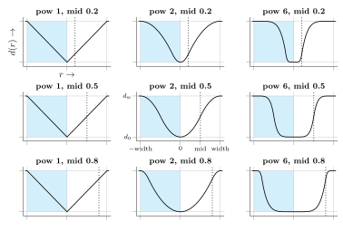
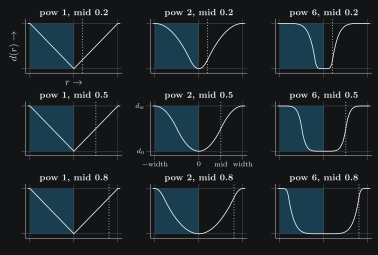
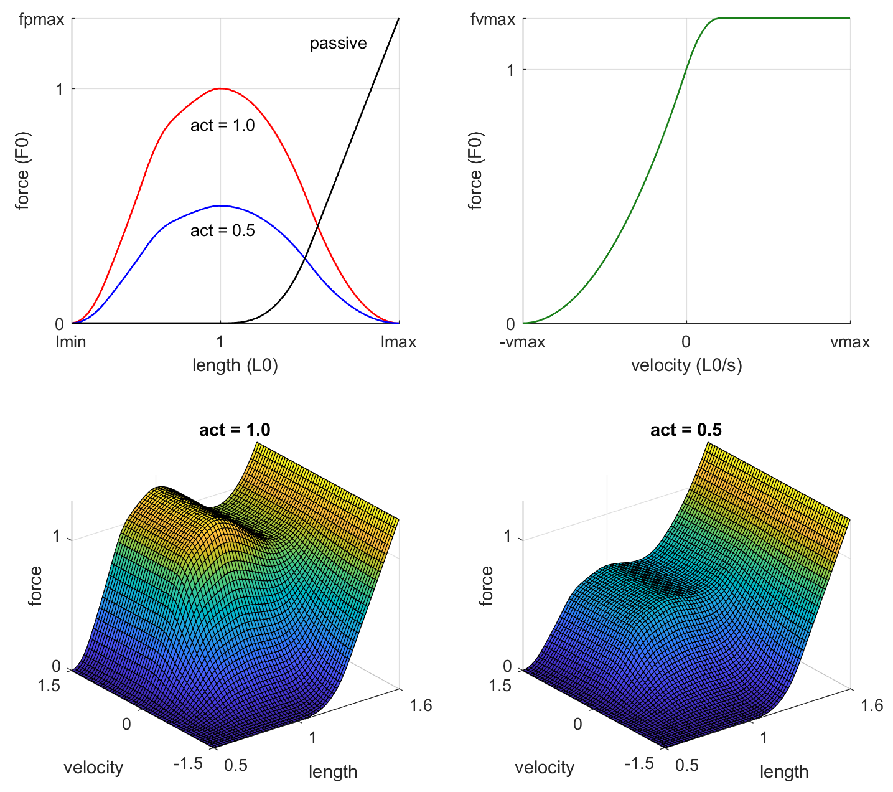
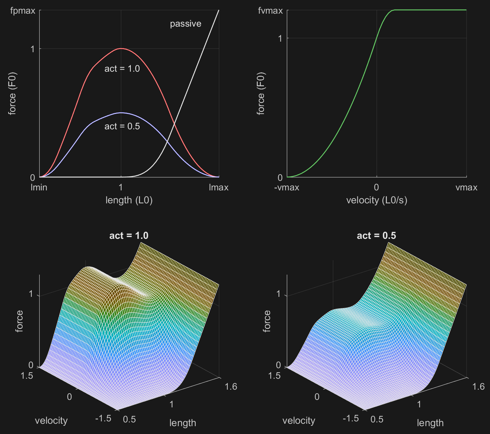
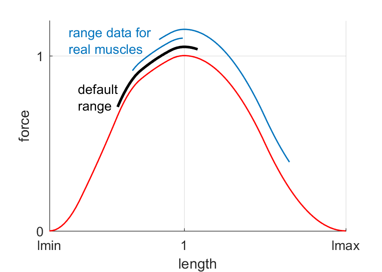
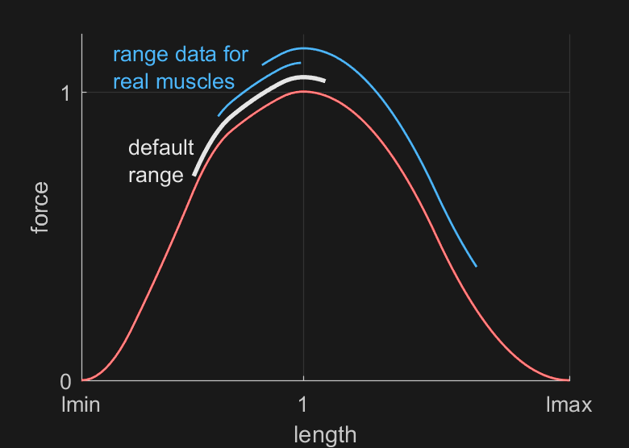
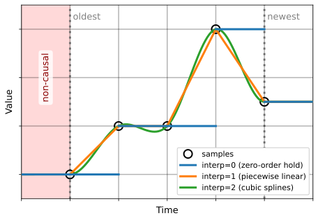
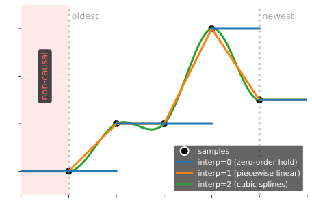
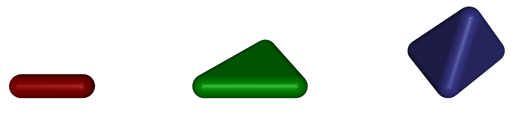

建模#
备注
本页由 AI（Claude Sonnet）根据 MuJoCo 官方英文文档（2026-11-16 版）翻译，仅供学习参考；如有出入，以英文原版为准。术语对照见资料包中的 术语表.md 。
简介#
MuJoCo 的原生模型（model）格式是 MJCF，这是一种基于 XML 的语言，用于描述复杂的动力学（dynamics）系统。本章是 MJCF 建模的主要指南。完整的元素与属性参考手册见 XML 参考 一章。MuJoCo 也支持从其他格式加载模型，例如 URDF（参见 URDF 扩展）、MJZ Zip 压缩包（参见 MJZ 压缩包）以及 OpenUSD（参见 OpenUSD）。
MJCF 模型可以表示具有丰富特性和模型元素的复杂动力学系统。要使用所有这些特性，就需要一种内容丰富的建模格式；如果设计时没有顾及易用性，这种格式就会变得繁琐。因此我们努力把 MJCF 设计成一种可扩展的格式，允许用户从小模型起步，之后再逐步构建更详细的模型。在这方面特别有帮助的是功能完备的默认设置机制，它的灵感来自内嵌于 HTML 的层叠样式表（CSS）。该机制使用户能够快速创建新模型并进行实验。众多选项可用来重新配置仿真流水线，再加上快速重新加载，使模型编辑成为一个交互式的过程，这些都进一步便利了实验。
可以把 MJCF 看作建模格式与编程语言的混合体。它内置了一个编译器，而编译器通常是与编程语言相关联的概念。虽然 MJCF 不具备通用编程语言的能力，但根据模型的设计方式，它会自动触发许多复杂的编译期计算。
过程化建模#
本章介绍高层次的模型设计。关于通过 mjSpec API 进行编程式建模（包括在 C/C++ 或 Python 中加载、编辑、编译和保存模型）的详细文档，请参阅 模型编辑 一章。
MJCF 机制#
MJCF 使用若干跨越多种模型元素的机制来创建模型。为避免重复，我们只在本节中详细描述它们一次。这些机制并不对应于计算（Computation）一章所介绍的概念之外的新仿真概念。它们的作用是简化 MJCF 模型的创建，并使用户无需手动转换为规范格式即可使用不同的数据格式。
运动学树#
MJCF 文件的主体部分是由嵌套的 body 元素构成的 XML 树。最顶层的 body 比较特殊，称为 worldbody。这种树形组织方式与 URDF 不同：URDF 先创建一组连杆（link），再用关节把它们连接起来，由关节指定子连杆和父连杆。在 MJCF 中，子刚体（body）就是父刚体在 XML 意义上的子节点。
在刚体内部定义关节（joint）时，其作用并不是连接父刚体与子刚体，而是在它们之间创建运动自由度（degrees of freedom）。如果某个刚体内没有定义任何关节，该刚体就被焊接到它的父刚体上。MJCF 中的一个刚体可以包含多个关节，因此无需为创建复合关节而引入虚拟刚体。只需在同一个刚体内定义构成所需复合关节的所有基本关节即可。例如，两个滑动关节和一个铰链关节可以用来为在平面内运动的刚体建模。
其他 MJCF 元素也可以定义在由嵌套 body 元素构成的树中，尤其是 joint、geom、site、camera、light。当一个元素定义在某个刚体内部时，它固定在该刚体的局部坐标系（frame）中，并始终随该刚体一起运动。涉及多个刚体的元素，或完全不涉及刚体的元素，则定义在运动学树之外的单独部分中。
默认设置#
MJCF 有一套精细的机制用于设置属性的默认值。这使我们既可以拥有大量元素和属性来展现软件的丰富功能，又能写出简短易读的模型文件。该机制还使用户只需在一处做出更改，就能让更改传播到整个模型。我们先看一个例子。
<mujoco>
<default class="main">
<geom rgba="1 0 0 1"/>
<default class="sub">
<geom rgba="0 1 0 1"/>
</default>
</default>
<worldbody>
<geom type="box"/>
<body childclass="sub">
<geom type="ellipsoid"/>
<geom type="sphere" rgba="0 0 1 1"/>
<geom type="cylinder" class="main"/>
</body>
</worldbody>
</mujoco>
这个例子实际上无法通过编译，因为缺少一些必需的信息，但这里我们只关心 geom 的 rgba 值如何设置。经过默认设置机制处理后，上面创建的四个 geom 最终的 rgba 值如下：
geom 类型 geom type |
geom rgba |
|---|---|
box |
1 0 0 1 |
ellipsoid |
0 1 0 1 |
sphere |
0 0 1 1 |
cylinder |
1 0 0 1 |
box 没有指定其他类，因此使用顶层的默认类（default class）"main" 来设置其未定义属性的值。body 指定了 childclass "sub"，这使得该刚体的所有子节点（以及它们的所有子节点，依此类推）都使用类 "sub"，除非另有指定。因此 ellipsoid 使用类 "sub"。sphere 显式定义了 rgba，它会覆盖默认设置。cylinder 指定了默认类 "main"，所以它使用 "main" 而不是 "sub"，尽管包含该 geom 的 body 的 childclass 属性指定的是后者。
现在我们来介绍一般规则。MuJoCo 支持数量不限的默认类，它们由 XML 中（可能嵌套的）default 元素创建。每个类都有唯一的名称——这是必需属性，但顶层类除外，如果未定义，其名称为 "main"。每个类还拥有一整套虚拟模型元素，其属性按如下方式设置。当一个默认类定义在另一个默认类之内时，子类会自动继承父类的所有属性值，然后可以通过定义相应的属性来覆盖其中的部分或全部值。顶层默认类没有父类，因此它的属性被初始化为内部默认值，这些值显示在参考章节中。
默认类中包含的虚拟元素不是模型的一部分，它们仅用于初始化实际模型元素的属性值。当一个实际元素首次被创建时，它的所有属性都从当前处于活动状态的默认类中对应的虚拟元素复制而来。总有一个默认类处于活动状态，其确定方式有以下三种之一。如果当前元素及其所有祖先刚体都没有指定类，则使用顶层类（无论它叫 "main" 还是别的名称）。如果当前元素没有指定类，但其一个或多个祖先刚体指定了 childclass，则使用最近的祖先刚体的 childclass。如果当前元素指定了类，则无论其祖先刚体中的 childclass 属性是什么，都使用该类。
某些属性（例如刚体的惯性（inertia））可以处于一种特殊的未定义状态。这会指示编译器根据其他信息推断相应的值，在这个例子中是根据附着在该刚体上的 geom 的惯性。XML 文件中无法进入未定义状态。因此，一旦某个属性在某个类中被定义，它就不能在该类或其任何子类中被重新置为未定义。所以，如果目标是让某个模型元素的某个属性保持未定义，那么它必须在当前活动的默认类中处于未定义状态。
最后还有一个特殊情况，即执行器（actuator）。它们有所不同，因为一些与执行器相关的元素实际上是快捷方式，而快捷方式与默认设置机制的交互方式并不直观。这将在下面的 执行器快捷方式 一节中解释。
坐标系#
运动学树中定义的所有元素的位置和朝向都用局部坐标表示：对刚体而言，相对于其父刚体；对 geom、关节、site、camera 和 light 而言，相对于包含该元素的刚体。
一个相关的属性是 compiler/angle。它指定 MJCF 文件中的角度以度还是弧度表示（编译之后，角度始终以弧度表示）。
位置通过下面的属性指定：
- pos: real(3), "0 0 0"
相对于父级的位置。
Position relative to parent.
坐标系朝向#
若干模型元素具有与之关联的右手空间坐标系。它们是运动学树中定义的除关节以外的所有元素。空间坐标系由其位置和朝向定义。指定三维位置很直接，但指定三维朝向可能具有挑战性。这就是 MJCF 提供多种备选机制的原因。无论用户选择哪种机制，坐标系朝向在内部总是被转换为单位四元数（quaternion）。回想一下，绕单位向量 \((x, y, z)\) 给定的轴旋转角度 \(a\) 的三维旋转对应于四元数 \((\cos(a/2), \: \sin(a/2) \cdot (x, y, z))\)。还要记住，每一个三维朝向都可以由绕某个轴旋转某个角度的单次三维旋转唯一地确定。
所有具有空间坐标系的 MJCF 元素都允许使用下面列出的五个属性。坐标系朝向至多使用其中一个属性来指定。quat 属性的默认值对应于零旋转，而其他属性都初始化为特殊的未定义状态。因此，如果用户没有指定其中任何一个属性，坐标系就不会发生旋转。
- quat: real(4), "1 0 0 0"
如果已知四元数，这是指定坐标系朝向的首选方式，因为它不涉及转换。它会在编译期间被归一化为单位长度，并复制到 mjModel 中。当模型以规范表示法（savecanonical）保存为 MJCF，或者以编译所得的值（savecompiled）保存时，所有坐标系朝向都使用该属性以四元数表示；否则每个朝向都按其原本的写法保存。
If the quaternion is known, this is the preferred was to specify the frame orientation because it does not involve conversions. Instead it is normalized to unit length and copied into mjModel during compilation. When a model is saved as MJCF in the canonical notation (savecanonical), or with the values which compilation made (savecompiled), all frame orientations are expressed as quaternions using this attribute; otherwise each is saved as it was written.- axisangle: real(4), optional
这就是上面提到的量 \((x, y, z, a)\)。最后一个数是旋转角度，单位为度或弧度，由 compiler 的 angle 属性指定。前三个数确定一个三维向量，即旋转轴。该向量在编译期间会被归一化为单位长度，因此用户可以指定任意非零长度的向量。请记住旋转遵循右手定则；如果将向量 \((x, y, z)\) 的方向反向，将得到相反的旋转。改变 \(a\) 的符号同样可以指定相反的旋转。
These are the quantities \((x, y, z, a)\) mentioned above. The last number is the angle of rotation, in degrees or radians as specified by the angle attribute of compiler. The first three numbers determine a 3D vector which is the rotation axis. This vector is normalized to unit length during compilation, so the user can specify a vector of any non-zero length. Keep in mind that the rotation is right-handed; if the direction of the vector \((x, y, z)\) is reversed this will result in the opposite rotation. Changing the sign of \(a\) can also be used to specify the opposite rotation.- euler: real(3), optional
绕三个坐标轴的旋转角度。施加这些旋转所依据的轴序列由 compiler 的 eulerseq 属性决定，并且对整个模型都相同。
Rotation angles around three coordinate axes. The sequence of axes around which these rotations are applied is determined by the eulerseq attribute of compiler and is the same for the entire model.- xyaxes: real(6), optional
前 3 个数是坐标系的 X 轴。接下来的 3 个数是坐标系的 Y 轴，它会被自动调整为与 X 轴正交。然后 Z 轴被定义为 X 轴与 Y 轴的叉积。
The first 3 numbers are the X axis of the frame. The next 3 numbers are the Y axis of the frame, which is automatically made orthogonal to the X axis. The Z axis is then defined as the cross-product of the X and Y axes.- zaxis: real(3), optional
坐标系的 Z 轴。编译器会找出将向量 \((0, 0, 1)\) 映射到此处所指定向量的最小旋转，由此隐式确定坐标系的 X 轴和 Y 轴。这对于绕 Z 轴具有旋转对称性的 geom 很有用，对于沿其坐标系 Z 轴方向放置的 light 也是如此。
The Z axis of the frame. The compiler finds the minimal rotation that maps the vector \((0, 0, 1)\) into the vector specified here. This determines the X and Y axes of the frame implicitly. This is useful for geoms with rotational symmetry around the Z axis, as well as lights – which are oriented along the Z axis of their frame.
求解器参数#
约束求解器（constraint solver）寻找满足软约束的力，软约束由三个量参数化：阻抗（impedance） \(d\)（约束被施加的强度）、刚度（stiffness） \(k\) 和 阻尼（damping） \(b\)（对违反约束的响应方式）。它们在计算（Computation）一章的 参数 一节中有数学上的描述。这里我们解释如何设置它们。设置是通过属性 solref 和 solimp 间接完成的，所有涉及约束的 MJCF 元素都有这两个属性。这些参数可以逐个约束调整，也可以按默认类调整，或者保持未定义——此时 MuJoCo 使用下面所示的内部默认值。另请注意 option 中提供的覆盖机制；它可用于在运行时更改所有与接触相关的求解器参数，以便交互式地试验参数设置，或为数值优化实现延拓方法。
这里我们关注单个标量约束。使用与计算章节略有不同的记号，令 \(\ac\) 表示加速度，\(v\) 表示速度，\(r\) 表示位置或残差（在摩擦维度中定义为 0），\(k\) 和 \(b\) 表示用来定义参考加速度 \(\ar = -b v - k r\) 的虚拟弹簧的刚度和阻尼（见 (13)）。令 \(d\) 为约束阻抗，\(\au\) 为没有约束力时的加速度。我们先前的分析表明，约束空间中的动力学近似为
同样，用户可以控制的参数是 \(d, b, k\)。其余的量是系统状态的函数，在每个时间步长（time step）自动计算。
阻抗#
我们首先解释约束阻抗 \(d\)。
阻抗 的直观描述
阻抗 \(d \in (0, 1)\) 对应于约束的产生力的能力。\(d\) 的值较小对应于较弱的约束，\(d\) 的值较大则对应于较强的约束。阻抗在任何时候都会影响约束，尤其是系统处于静止状态时。阻抗通过 solimp 属性设置。
回想一下，\(d\) 必须介于 0 和 1 之间；MuJoCo 在内部将其限制在范围 [mjMINIMP mjMAXIMP] 内，该范围目前设置为 [0.0001 0.9999]。它使求解器在无约束加速度 \(\au\) 与参考加速度 \(\ar\) 之间进行插值。用户可以把 \(d\) 设为常数，也可以利用其插值特性使其与位置相关，即约束违反量 \(r\) 的函数。与位置相关的阻抗可用来为物体周围的软接触（soft contact）层建模，或定义违反量越大约束越强的等式约束（例如用来近似齿隙）。函数 \(d(r)\) 的形状由元素特有的参数向量 solimp 决定。
- solimp : real(5), "0.9 0.95 0.001 0.5 2"
这五个数（\(d_0\)、\(d_\mathrm{w}\)、\(\text{width}\)、\(\text{midpoint}\)、\(\text{power}\)）参数化了 \(d(r)\)——即阻抗 \(d\) 作为约束违反量 \(r\) 的函数。
The five numbers (\(d_0\), \(d_\mathrm{w}\), \(\text{width}\), \(\text{midpoint}\), \(\text{power}\)) parameterize \(d(r)\) – the impedance \(d\) as a function of the constraint violation \(r\).前 3 个值表示，当 \(r\) 从 \(0\) 变化到 \(\text{width}\) 时，阻抗将平滑变化：
The first 3 values indicate that the impedance will vary smoothly as \(r\) varies from \(0\) to \(\text{width}\):\[d(0) = d_0, \quad d(\text{width}) = d_\mathrm{w} \]第 4 个和第 5 个值，即 \(\text{midpoint}\) 和 \(\text{power}\)，控制在 \(d_0\) 与 \(d_\mathrm{w}\) 之间进行插值的 S 形（sigmoid）函数的形状，如下图所示。图中显示了两条互为镜像的 S 形曲线，因为阻抗 \(d(r)\) 取决于 \(r\) 的绝对值。\(\text{power}\)（即用于生成该函数的多项式样条的次数）必须大于或等于 1。\(\text{midpoint}\)（指定拐点）必须介于 0 和 1 之间，并以 \(\text{width}\) 为单位表示。注意，当 \(\text{power}\) 为 1 时，无论 \(\text{midpoint}\) 取何值，该函数都是线性的。
The 4th and 5th values, \(\text{midpoint}\) and \(\text{power}\), control the shape of the sigmoidal function that interpolates between \(d_0\) and \(d_\mathrm{w}\), as shown in the plots below. The plots show two reflected sigmoids, because the impedance \(d(r)\) depends on the absolute value of \(r\). The \(\text{power}\) (of the polynomial spline used to generate the function) must be 1 or greater. The \(\text{midpoint}\) (specifying the inflection point) must be between 0 and 1, and is expressed in units of \(\text{width}\). Note that when \(\text{power}\) is 1, the function is linear regardless of the \(\text{midpoint}\).

这些图显示了阻抗 \(d(r)\) 随约束违反量 \(r\) 变化的函数关系。对于等式约束，\(r\) 就是约束违反量本身。对于限位（limit）、椭圆型摩擦锥的法线方向以及棱锥型摩擦锥的所有方向，\(r\) 是距离减去约束开始起作用时的裕量（对接触而言即 margin 属性）。这些单边约束仅在 \(r<0\) 时起作用，即图中阴影区域。
These plots show the impedance \(d(r)\) as a function of the constraint violation \(r\). For equality constraints, \(r\) is the constraint violation itself. For limits, normal directions of elliptic cones and all directions of pyramidal cones, \(r\) is the distance minus the margin at which the constraint becomes active (the margin attribute for contacts). These unilateral constraints are active only when \(r<0\), shown by the shaded region.对于摩擦约束，请参阅摩擦。
For frictional constraints, see Friction.平滑性与可微性
Smoothness and differentiability为了获得完全平滑（可微）的动力学，限位和接触应取 \(d_0=0\)（
solimp[0]=0）。特别是对于接触，应当记住与 geom 相关联的求解器参数的混合规则。另请参阅计算章节中以及 mjd_transitionFD 文档中关于导数的讨论。For completely smooth (differentiable) dynamics, limits and contacts should have \(d_0=0\) (solimp[0]=0). Specifically for contacts, the mixing rules of geom-associated solver parameters should be kept in mind. See also discussion of derivatives in the Computation chapter and in the mjd_transitionFD documentation.


参考#
接下来我们解释刚度 \(k\) 和阻尼 \(b\) 的设置，它们控制参考加速度 \(\ar\)。
参考加速度 的直观描述
参考加速度 \(\ar\) 决定了约束为纠正违反量而试图实现的运动。想象一个物体落到平面上。碰撞瞬间，约束会产生一个法向力，试图以特定的运动来纠正穿透（penetration）；这个运动就是参考加速度。
理解参考加速度的另一种方式，是考虑计算章节中描述的未建模形变变量。想象两个物体被压在一起，在接触处产生形变。现在迅速将两个物体拉开；形变在恢复到未变形状态的过程中的运动，就是参考加速度。
这个加速度由两个数定义，即刚度 \(k\) 和阻尼 \(b\)，它们可以直接设置，也可以重新参数化为质量-弹簧-阻尼系统（即谐振子）的时间常数和阻尼比。参考加速度由 solref 属性控制。
该属性有两种格式，由数值的符号决定。如果两个数都为正，则认为该设定采用 \((\text{timeconst}, \text{dampratio})\) 格式。如果为负，则采用“直接”格式 \((-\text{stiffness}, -\text{damping})\)。
对于摩擦约束，下面的质量-弹簧-阻尼分析并不直接适用；请参阅摩擦。
- solref : real(2), "0.02 1"
我们首先描述默认的正值格式，其中两个数为 \((\text{timeconst}, \text{dampratio})\)。
We first describe the default, positive-value format where the two numbers are \((\text{timeconst}, \text{dampratio})\).这里的想法是，用质量-弹簧-阻尼系统的时间常数和阻尼比来重新参数化模型。我们所说的“时间常数”是指固有频率与阻尼比之积的倒数。现在回想一下，(1) 中的乘积 \(d \cdot k\) 和 \(d \cdot b\) 是约束空间中的有效刚度和阻尼。由于阻抗 \(d(r)\) 随位置残差 \(r\) 变化，我们无法获得恒定的质量-弹簧-阻尼特性；完全消除 \(d\) 带来的缩放也是不可取的，因为这样一来极限情形 \(d = 0\) 就不再能禁用该约束。因此，我们把 \(d(r)\) 的一个因子吸收进 \(k\)（而不吸收进 \(b\)），这样阻尼比保持恒定，而时间常数随 \(d(r)\) 缩放。公式如下
The idea here is to re-parameterize the model in terms of the time constant and damping ratio of a mass-spring-damper system. By “time constant” we mean the inverse of the natural frequency times the damping ratio. Now recall that the products \(d \cdot k\) and \(d \cdot b\) in (1) are the effective stiffness and damping in constraint space. Because the impedance \(d(r)\) varies with the position residual \(r\), we cannot achieve constant mass-spring-damper properties; completely undoing the scaling by \(d\) is undesirable because the limit \(d = 0\) would no longer disable the constraint. Instead, we absorb one factor of \(d(r)\) into \(k\) (but not into \(b\)), so that the damping ratio remains constant while the time constant scales with \(d(r)\). The formulas are(2)#\[\begin{aligned} b &= 2 / (d_\mathrm{w}\cdot \text{timeconst}) \\ k &= d(r) / (d_\mathrm{w}^2 \cdot \text{timeconst}^2 \cdot \text{dampratio}^2) \\ \end{aligned}\]timeconst 参数应至少是仿真时间步长的两倍，否则相对于数值积分器（integrator）而言，系统可能变得过于刚硬（尤其是使用欧拉积分时），导致仿真发散。除非 flag 的 refsafe 属性被设为 false，否则内部会强制执行这一点。\(\text{dampratio}\) 参数通常设为 1，对应临界阻尼。较小的值会产生欠阻尼（即有弹跳感）的约束，较大的值则产生过阻尼的约束。将 (2) 与 (1) 结合，我们可以推导出如下如果参考加速度采用正数格式给出，并且阻抗为常数 \(d = d_0 = d_\mathrm{w}\)，则静止时的穿透深度为
The timeconst parameter should be at least two times larger than the simulation time step, otherwise the system can become too stiff relative to the numerical integrator (especially when Euler integration is used) and the simulation can go unstable. This is enforced internally, unless the refsafe attribute of flag is set to false. The \(\text{dampratio}\) parameter would normally be set to 1, corresponding to critical damping. Smaller values result in under-damped or bouncy constraints, while larger values result in over-damped constraints. Combining (2) with (1), we can derive the following If the reference acceleration is given using the positive number format and the impedance is constant \(d = d_0 = d_\mathrm{w}\), then the penetration depth at rest is\[r = \au \cdot (1 - d) \cdot \text{timeconst}^2 \cdot \text{dampratio}^2 \]接下来我们描述直接格式，其中两个数为 \((-\text{stiffness}, -\text{damping})\)。这尤其允许直接控制恢复系数。我们仍然施加一定的缩放，使得相同的数值可以用于不同的阻抗，但缩放不再依赖于 \(r\)，并且这两个数也不再相互影响。缩放公式为
Next we describe the direct format where the two numbers are \((-\text{stiffness}, -\text{damping})\). This allows direct control over restitution in particular. We still apply some scaling so that the same numbers can be used with different impedances, but the scaling no longer depends on \(r\) and the two numbers no longer interact. The scaling formulas are(3)#\[\begin{aligned} b &= \text{damping} / d_\mathrm{w} \\ k &= \text{stiffness} \cdot d(r) / d_\mathrm{w}^2 \\ \end{aligned}\]与 (2) 之后的推导类似，如果参考加速度采用阻抗为常数，则静止时的穿透深度为
Similarly to the derivation following (2), if the reference acceleration is given using the impedance is constant, then the penetration depth at rest is\[r = \frac{\au (1 - d)}{\text{stiffness}} \]
小技巧
在正值默认格式中，\(\text{timeconst}\) 参数控制约束的柔软度。它以时间为单位指定，含义是“约束试图以多快的速度消除违反量”。值越大，约束越软。
负值的“直接”格式更加灵活，例如允许完全弹性碰撞（\(\text{damping} = 0\)）。推荐在系统辨识中使用这种格式。
正值格式中 \(\text{dampratio}\) 为 1，等价于直接格式中 \(\text{damping} = 2 \sqrt{ \text{stiffness} }\)。
摩擦#
摩擦损耗约束（位于关节和肌腱中）以及椭圆型接触锥的摩擦维度具有零位置违反量：\(r \equiv 0\)。这简化了约束模型（另见 参数）：
阻抗始终为 \(d_0\)（solimp[0]），因为 \(d(r)\) 是在 \(r=0\) 处求值的。S 形的形状参数（\(\text{width}\)、\(\text{midpoint}\)、\(\text{power}\)）不起作用。
The impedance is always \(d_0\) (solimp[0]), since \(d(r)\) is evaluated at \(r=0\). The sigmoid shape parameters (\(\text{width}\), \(\text{midpoint}\), \(\text{power}\)) have no effect.动力学是一阶的（约束速度呈指数衰减，没有弹簧）：刚度 \(k\) 始终为 0。
The dynamics are first-order (exponential decay of constraint velocity, no spring): the stiffness \(k\) is always 0.在标准 solref 格式中，时间常数控制速度的指数衰减。阻尼比被忽略（它只出现在 \(k\) 的公式中）。
In the standard solref format, the time constant controls exponential velocity decay. The damping ratio is ignored (it only appears in the \(k\) formula).在直接 solref 格式中，使用阻尼（第二个值），但忽略刚度（第一个值）。
In the direct solref format, the damping (second value) is used but the stiffness (first value) is ignored.\(d_\mathrm{w}\)（solimp[1]）仍然会作为缩放分母影响阻尼 \(b\)（(2)、(3)），尽管它不影响阻抗。
关于该模型对精确黏着的影响及实际操作指导，请参阅缓慢滑移。
接触参数#
每个接触（contact）的参数已在计算（Computation）一章的 接触 一节中描述。这里我们解释如何设置这些参数。如果 geom 对是用 XML 元素 pair 显式定义的，它带有直接指定所有接触参数的属性，此时各个 geom 自身的参数会被忽略。另一方面，如果接触是由动态机制生成的，则需要根据接触对中的两个 geom 来推断其参数。如果两个 geom 的参数相同，就无需做任何处理；但如果它们的参数不同呢？这时我们使用 geom 的属性 solmix 和 priority 来决定如何组合它们。每个接触参数的组合规则如下：
- condim
如果两个 geom 中有一个优先级更高，则使用它的 condim。如果两个 geom 的优先级相同，则使用二者 condim 中的最大值。这样，无摩擦的 geom 与有摩擦的 geom 会形成有摩擦的接触，除非无摩擦的 geom 具有更高的优先级。后一种情形在例如粒子系统中是合乎需要的，因为我们可能不希望粒子黏附在任何物体上。
If one of the two geoms has higher priority, its condim is used. If both geoms have the same priority, the maximum of the two condims is used. In this way a frictionless geom and a frictional geom form a frictional contact, unless the frictionless geom has higher priority. The latter is desirable in particle systems for example, where we may not want the particles to stick to any objects.- friction
回想一下，接触最多可以有 5 个摩擦系数：两个切向、一个扭转、两个滚动。mjData.contact 中的每个接触实际上都有全部 5 个系数，即使 condim 小于 6 因而并非所有系数都被用到。相比之下，geom 只有 3 个摩擦系数：切向（两个轴相同）、扭转、滚动（两个轴相同）。这些摩擦系数的三维向量中的每一个，都通过复制切向和滚动分量被扩展为五维摩擦系数向量。关于切向、扭转和滚动系数含义的直观描述，请参阅计算章节中的接触一节。
Recall that contacts can have up to 5 friction coefficients: two tangential, one torsional, two rolling. Each contact in mjData.contact actually has all 5 of them, even if condim is less than 6 and not all coefficients are used. In contrast, geoms have only 3 friction coefficients: tangential (same for both axes), torsional, rolling (same for both axes). Each of these 3D vectors of friction coefficients is expanded into a 5D vector of friction coefficients by replicating the tangential and rolling components. See the Contact section in the Computation chapter for an intuitive description of the semantics of tangential, torsional and rolling coefficients.然后按以下规则计算接触的摩擦系数：如果两个 geom 中有一个优先级更高，则使用它的摩擦系数。否则，对每个摩擦系数，取两个 geom 的逐元素最大值。
The contact friction coefficients are then computed according to the following rule: if one of the two geoms has higher priority, its friction coefficients are used. Otherwise the element-wise maximum of each friction coefficient over the two geoms is used.每个接触有 5 个系数而每个 geom 只有 3 个系数，原因如下。对于接触对，我们希望允许求解器所能处理的最灵活的模型。如前所述，各向异性摩擦可用来为滑冰之类的效应建模。然而，这需要知道接触切平面的两个轴是如何取向的。对于预定义的接触对，我们事先知道两个 geom 的类型，相应的碰撞函数总是以相同的方式生成取向固定的接触坐标系——我们在此不作描述，但可以在可视化器（visualizer）中看到。而对于单个 geom，我们不知道它可能与哪些其他 geom 碰撞，也不知道那些 geom 的类型，因此在指定单个 geom 时，无从得知接触切平面将如何取向。这就是 MuJoCo 不允许在单个 geom 的定义中使用各向异性摩擦，而只允许在显式的接触对定义中使用的原因。
The reason for having 5 coefficients per contact and only 3 per geom is as follows. For a contact pair, we want to allow the most flexible model our solver can handle. As mentioned earlier, anisotropic friction can be exploited to model effects such as skating. This however requires knowing how the two axes of the contact tangent plane are oriented. For a predefined contact pair we know the two geom types in advance, and the corresponding collision function always generates contact frames oriented in the same way – which we do not describe here but it can be seen in the visualizer. For individual geoms however, we do not know which other geoms they might collide with and what their geom types might be, so there is no way to know how the contact tangent plane will be oriented when specifying an individual geom. This is why MuJoCo does not allow anisotropic friction in the individual geom specifications, but only in the explicit contact pair specifications.- margin，gap
使用两个 geom 的 margin（或分别为 gap）之和。这里忽略 geom 的优先级，因为 margin 和 gap 是距离属性，单侧指定没有什么意义。请参阅 margin 与 gap。
The sum of the two geom margins (or gaps respectively) is used. The geom priority is ignored here, because the margin and gap are distance properties and a one-sided specification makes little sense. See margin and gap.
- solref，solimp
如果两个 geom 中有一个具有更高的优先级，则使用它的 solref 和 solimp 参数。如果两个 geom 的优先级相同，则使用加权平均值。权重与 solmix 属性成正比，即 weight1 = solmix1 / (solmix1 + solmix2)，weight2 类似。这一加权平均规则有一个重要的例外。如果任一 geom 的 solref 为非正数，即采用直接格式，则无论 solmix 为何，都使用逐元素最小值。这是因为对不同格式的 solref 参数求平均是没有意义的。
If one of the two geoms has higher priority, its solref and solimp parameters are used. If both geoms have the same priority, the weighted average is used. The weights are proportional to the solmix attributes, i.e., weight1 = solmix1 / (solmix1 + solmix2) and similarly for weight2. There is one important exception to this weighted averaging rule. If solref for either geom is non-positive, i.e., it relies on the direct format, then the element-wise minimum is used regardless of solmix. This is because averaging solref parameters in different formats would be meaningless.
接触覆盖#
MuJoCo 使用一种精巧而新颖的约束模型，它在计算章节中有描述。要对该模型的工作方式建立直觉，需要做一些实验。为了便于这一过程，我们提供了一种机制，可以在不更改实际模型的情况下覆盖部分求解器参数。一旦禁用覆盖，仿真就会恢复为模型中指定的参数。该机制也可用于在数值优化（例如最优控制或状态估计）的场景中实现延拓方法。具体做法是在优化的早期阶段允许接触隔空起作用——以帮助优化器找到梯度并接近一个良好的解——然后在后期减弱这种效应，使最终解在物理上是真实的。
这里相关的设置有 flag 的 override 属性，它用于启用和禁用该机制；以及 option 的 o_margin、o_solref、o_solimp 属性，它们用于指定新的求解器参数。请注意，覆盖只适用于接触，而不适用于其他类型的约束。原则上，MuJoCo 模型中有许多实值参数都可以从类似的覆盖机制中受益。但我们必须划一条界线，而接触是自然的选择，因为它们产生了最丰富同时也最难调节的行为。此外，接触动力学在数值优化方面往往带来挑战，经验表明，对接触参数进行延拓有助于避免局部极小值。
用户参数#
许多 MJCF 元素具有可选属性 user，它定义了一个自定义的、特定于元素的参数数组。它与 size 元素中对应的 "nuser_XXX" 属性相互作用。例如，如果我们把 nuser_geom 设为 5，那么 mjModel 中的每个 geom 都会有一个包含 5 个实值参数的自定义数组。这些特定于 geom 的参数，要么通过 geom 的 user 属性在 MJCF 文件中定义，要么在省略该属性时由编译器设为 0。所有 "nuser_XXX" 属性的默认值都是 -1，这会指示编译器自动将该值设为模型中定义的相关 user 属性的最大长度。MuJoCo 不会在任何内部计算中使用这些参数；它们可供自定义计算使用。解析器允许 XML 中的数组具有任意长度，编译器随后会将其调整为长度 nuser_XXX。
某些通常用于内部计算的、特定于元素的参数也可以用于自定义计算。这是通过安装用户回调函数来覆盖仿真流水线的某些部分实现的。例如，general 执行器元素具有属性 dyntype 和 dynprm。如果 dyntype 设为 "user"，那么 MuJoCo 将调用 mjcb_act_dyn 来计算执行器动力学，而不是调用其内部函数。mjcb_act_dyn 所指向的用户函数可以随意解释 dynprm 中定义的参数。但是，这个参数数组的长度无法更改（不同于前面所述的、长度在 MJCF 文件中定义的自定义数组）。其他回调函数也是如此。
除了上述特定于元素的用户参数之外，还可以通过 custom 元素在模型中包含全局数据。对于在仿真过程中会变化的数据，还有数组 mjData.userdata，其大小由 size 元素的 nuserdata 属性决定。
求解器设置#
计算约束力和受约束的加速度，需要以数值方式求解一个优化问题。MuJoCo 有三种求解该优化问题的算法：Newton、CG、PGS。它们中的每一种都可以应用于摩擦锥的棱锥型（pyramidal）或椭圆型（elliptic）模型，并可使用稠密或稀疏的约束雅可比（Jacobian）矩阵。此外，用户可以指定最大迭代次数，以及控制提前终止的容差水平。还有一个 NoSlip 求解器，它是一个后处理步骤，通过指定正数的 NoSlip 迭代次数来启用。所有这些算法设置都可以在 option 元素中指定。
默认设置对大多数模型都适用，但在某些情况下需要调整算法。最好的办法是对相关设置进行实验，并使用 simulate.cc 中的可视化性能分析器，它显示不同计算的耗时以及每次迭代的求解器统计信息。我们可以提供以下一般性的指导和观察结果：
对于小模型，约束雅可比矩阵应当使用稠密格式，对于大模型则应使用稀疏格式。默认设置为 'auto'；当自由度数目不超过 60 时解析为稠密，超过 60 时解析为稀疏。不过请注意，更合适的做法是以活动约束的数量来定义该阈值，而它取决于模型和行为。
The constraint Jacobian should be dense for small models and sparse for large models. The default setting is ‘auto’; it resolves to dense when the number of degrees of freedom is up to 60, and sparse over 60. Note however that the threshold is better defined in terms of number of active constraints, which is model and behavior dependent.在棱锥型和椭圆型摩擦锥之间做选择，属于建模选择而非算法选择，即它导致的是用相同算法求解的不同优化问题。椭圆锥更接近物理现实。不过棱锥型锥可以提高算法的性能——但并不一定如此。虽然默认是棱锥型，我们仍建议尝试椭圆锥。当接触滑移成为问题时，抑制它的最佳方式是使用椭圆锥、较大的 impratio，以及容差非常小的 Newton 算法。如果这还不够，请启用 Noslip 求解器。
The choice between pyramidal and elliptic friction cones is a modeling choice rather than an algorithmic choice, i.e., it leads to a different optimization problem solved with the same algorithms. Elliptic cones correspond more closely to physical reality. However pyramidal cones can improve the performance of the algorithms – but not necessarily. While the default is pyramidal, we recommend trying the elliptic cones. When contact slip is a problem, the best way to suppress it is to use elliptic cones, large impratio, and the Newton algorithm with very small tolerance. If that is not sufficient, enable the Noslip solver.对大多数模型而言，Newton 算法是最佳选择。它在全局极小值附近具有二次收敛性，并且只需出人意料地少的迭代次数就能到达——通常约为 5 次，很少超过 20 次。应当将它与激进的容差值（比如 1e-10）一起使用，因为它能够在不增加额外延迟的情况下达到很高的精度（由于末段的二次收敛）。稀疏 Newton 将椭圆摩擦锥折叠进 Hessian 矩阵，批量进行 Cholesky 更新，并自动对 flex 的自由度重新排序，因此速度下降主要出现在非常大的场景中，此时稀疏 Cholesky 的填充（fill-in）仍占主导（例如未经重排的刚性枢纽刚体；参见下文的刚体顺序与填充），或出现在许多滑动接触之间活动集剧烈变动的情形下。请注意，分解后的 Hessian 矩阵中非零元素的数量可以在性能分析器中监控。
The Newton algorithm is the best choice for most models. It has quadratic convergence near the global minimum and gets there in surprisingly few iterations – usually around 5, and rarely more than 20. It should be used with aggressive tolerance values, say 1e-10, because it is capable of achieving high accuracy without added delay (due to quadratic convergence at the end). Sparse Newton folds elliptic friction cones into the Hessian, batches Cholesky updates, and automatically reorders flex DOFs, so slowdowns mainly occur in very large scenes where sparse Cholesky fill-in still dominates (for instance, un-reordered rigid hub bodies; see Body ordering and fill-in below) or under heavy active-set churn across many slipping contacts. Note that the number of non-zeros in the factorized Hessian can be monitored in the profiler.在那些非常大或高填充的情形下，CG 算法可能更快。一般而言，CG 表现出速率良好的线性收敛，不过它需要比 Newton 多得多的迭代次数，尤其是在需要高精度时。但是每次迭代的开销很小，且不受 Cholesky 填充或椭圆锥 Hessian 更新的影响，这使得 CG 在 Hessian 分解占据步长耗时主导时成为有用的替代方案。
The CG algorithm can be faster in those very large or high-fill-in regimes. In general CG shows linear convergence with a good rate, though it requires many more iterations than Newton, especially when high accuracy is desired. However each iteration is cheap and unaffected by Cholesky fill-in or elliptic-cone Hessian updates, making CG a useful alternative when Hessian factorization dominates step time.当自由度数目大于约束数目时，PGS 求解器是最佳选择。PGS 求解的是一个带约束的优化问题，据我们的经验它具有次线性收敛性，不过通常在最初几次迭代中进展迅速。因此，当可以容忍不精确的解时，它是一个不错的选择。对于质量比很大或存在其他导致病态条件的模型性质的系统，PGS 的收敛往往相当缓慢。请记住，PGS 执行的是顺序更新，因此会在物理上本应对称的系统中破坏对称性。相比之下，CG 和 Newton 执行的是并行更新，能保持对称性。
The PGS solver is best when the number of degrees of freedom is larger than the number of constraints. PGS solves a constrained optimization problem and has sub-linear convergence in our experience, however it usually makes rapid progress on the first few iterations. So it is a good choice when inaccurate solutions can be tolerated. For systems with large mass ratios or other model properties causing poor conditioning, PGS convergence tends to be rather slow. Keep in mind that PGS performs sequential updates, and therefore breaks symmetry in systems where the physics should be symmetric. In contrast, CG and Newton perform parallel updates and preserve symmetry.NoSlip 求解器是修改后的 PGS 求解器。它作为后处理步骤，在主求解器（可以是 Newton、CG 或 PGS）之后执行。主求解器更新所有未知量。相比之下，NoSlip 求解器只更新摩擦维度中的约束力，并忽略约束正则化（regularization）。这样做的效果是抑制软约束模型引起的漂移或滑移。然而，这种级联的优化步骤不再是在求解一个定义明确的优化问题（或任何其他问题）；它只是一种临时性的机制。虽然它通常能完成任务，但我们也在多个接触之间交互较复杂的模型中见到过一些不稳定现象。
The NoSlip solver is a modified PGS solver. It is executed as a post-processing step after the main solver (which can be Newton, CG or PGS). The main solver updates all unknowns. In contrast, the NoSlip solver updates only the constraint forces in friction dimensions, and ignores constraint regularization. This has the effect of suppressing the drift or slip caused by the soft-constraint model. However, this cascade of optimization steps is no longer solving a well-defined optimization problem (or any other problem); instead it is just an adhoc mechanism. While it usually does its job, we have seen some instabilities in models with more complex interactions among multiple contacts.PGS 在 CPU 时间方面有一项准备开销，用于计算约束空间中的逆惯性。类似地，Newton 有对 Hessian 做初始分解的准备开销，并且根据之后需要多少次分解更新而产生额外的分解开销。CG 没有任何准备开销。由于 NoSlip 求解器同样是 PGS 求解器，因此只要启用 NoSlip，即使主求解器是 CG 或 Newton，也要付出 PGS 的准备开销。主 PGS 和 NoSlip PGS 的准备操作是相同的，因此二者同时启用时，准备开销只需付出一次。
PGS has a setup cost (in terms of CPU time) for computing the inverse inertia in constraint space. Similarly, Newton has a setup cost for the initial factorization of the Hessian, and incurs additional factorization costs depending on how many factorization updates are needed later. CG does not have any setup cost. Since the NoSlip solver is also a PGS solver, the PGS setup cost will be paid whenever NoSlip is enabled, even if the main solver is CG or Newton. The setup operation for the main PGS and NoSlip PGS is the same, thus the setup cost is paid only once when both are enabled.
刚体顺序与填充#
小技巧
在 worldbody 中，应将接触很多的运动刚体声明在与其交互的物体之前，使它们获得较小的自由度索引，从而避免稠密的 Cholesky 填充。
在稀疏模式下，Newton 求解器使用逆序 Cholesky 分解对 Hessian 矩阵 \(H = \widehat{M} + J^T D J\) 进行分解，从最后一个到第一个依次消去自由度（从 \(\nv - 1\) 到 \(0\)，即从叶节点到根节点）。仅就树状结构的矩阵 \(\widehat{M}\) 而言，这种消元顺序是最优的，且不产生填充。接触、肌腱（tendon）和等式约束（equality constraint）会在 \(J^T D J\) 中引入树之外的耦合：当自由度 \(r\) 被消去时，它会在当前与 \(r\) 耦合的所有索引更小的自由度（\(c < r\)）之间产生填充，在它们之间形成一个稠密的团。
因此，worldbody 中刚体的声明顺序可以在不改变物理的情况下显著影响求解器的速度。一个同时与许多其他刚体接触的运动“枢纽”刚体——例如被驱动的托盘、筛子、容器或平台——应当声明在放置于其上或其内的物体之前。如果运动的托盘先声明（自由度索引低），而 \(N\) 个自由刚体在其后声明（自由度索引高），则这些自由刚体会先被消去，并且只在托盘的自由度中产生填充，形成箭头状的稀疏模式，零填充，分解代价为 \(O(N)\)。如果托盘最后声明，它会被最先消去，并把所有 \(N\) 个刚体耦合成一个稠密块，代价为 \(O(N^3)\)。直接附着在 worldbody 上或附着在焊接刚体上的静态 geom 没有自由度，不受顺序影响。当模型包含 flex 元素时，只要重排带来的分解代价降低足以抵消重排本身的开销，稀疏 Newton 就会自动计算最小度的自由度置换，因此无需手动调整 flex 刚体或顶点在 XML 中的顺序。
Newton automatically computes a
minimum-degree DOF permutation whenever it lowers factorization cost enough to amortize the reordering overhead, so
manual XML ordering of flex bodies or vertices is unnecessary.执行器#
本节介绍在 MuJoCo 中使用执行器（actuator）的各个方面。有关计算模型，请参阅执行模型。
分组禁用#
actuatorgroupdisable 属性可以在运行时通过设置 mjOption.disableactuator 整数位域来更改，它允许用户按 group 禁用成组的执行器。当希望为同一棵运动学树使用多种类型的执行器时，这一特性很方便。例如，考虑一个固件支持多种控制模式（如力矩控制和位置控制）的机器人。这时，可以在同一个 MJCF 模型中定义这两种类型的执行器，将一种类型的执行器分配到组 0，另一种分配到组 1。
MJCF 属性 actuatorgroupdisable 选择默认禁用哪些组，并且可以在运行时设置 mjOption.disableactuator 来切换活动集合。请注意，执行器总数 mjModel.nu 保持不变，执行器索引也保持不变，因此用户需要自行知晓，被禁用执行器的相应 mjData.ctrl 值将被忽略且不产生力。这个示例模型有三个执行器组，可以在 simulate 交互式查看器中在运行时切换。请参阅示例模型以及右侧相关的屏幕录像。
mjModel.nu remains unchanged, as do the actuator indices, so it is up to the user to know
that the respective mjData.ctrl values of disabled actuators will be ignored and produce no force. This example
model
has three actuator groups which can be toggled at runtime in the simulate interactive viewer.
See example model
and associated screen-capture on the right.快捷方式#
如计算章节的执行模型一节所述，MuJoCo 提供了一个灵活的执行器模型，其传动（transmission）、激活动力学和力生成部分可以独立指定。完整的功能可通过 XML 元素 general 访问，它允许用户创建各种自定义执行器。此外，MJCF 还为配置常见执行器提供了快捷方式。这通过以下 XML 元素完成：motor、position、velocity、intvelocity、orientation、pid、damper、cylinder、muscle、adhesion 和 dcmotor。它们不是独立的模型元素。MuJoCo 内部只支持一种执行器类型。快捷方式会隐式创建 general 执行器，将其属性设置为合适的值，并公开属性的一个子集，这些属性的名称可能有所不同。当模型按其编写时所用的表示法保存时，如果将快捷方式读回后得到的是同一个执行器，则执行器以其快捷方式写出，否则写为 general；在规范表示法中，每个执行器都是 general。例如，position 创建一个位置伺服，带有属性 kp，即伺服增益。但是 general 没有属性 kp。取而代之的是，解析器以协调的方式调整 general 执行器的增益和偏置参数，以模仿位置伺服。同样的效果也可以通过直接使用 general 并将其属性设置为下面所述的某些值来实现。
执行器快捷方式还与默认设置相互作用。回想一下，默认设置机制涉及类，每个类都有一整套虚拟元素（每种元素类型各一个），用于初始化实际模型元素的属性。特别地，每个默认类只有一个执行器默认值，用 general 或某个快捷方式书写。执行器会继承其所属类的全部执行器默认值，包括 ctrlrange 和 gear 之类的机械属性。快捷方式参数（kp、kv、area 等）继承自用同一快捷方式书写的默认值，或者继承自增益类型与该快捷方式相同的 general 默认值（其原始的增益和偏置参数被当作该快捷方式的参数来读取）；它们不会继承自用另一种快捷方式书写的默认值。在那种情况下，将使用该快捷方式可以从中继承的最近祖先类；如果没有这样的类，则采用该快捷方式自己文档中规定的默认值。因此，默认值为 position 的类中的 motor 是一个普通的 motor，带有该类的 ctrlrange，而不是位置伺服；默认值为 general 且 gainprm 为 "400" 的类中的 position，其 kp 为 400；而默认值为 velocity 的子类中的 position，其 kp 取自父类的 position 默认值。general 本身会继承任何默认值的原始增益、偏置和动力学参数，因此，在具有 position 默认值的类中，省略这些属性的 general 就是一个位置伺服。如果一个类中给出了多个执行器元素，它们按顺序处理：每个快捷方式都会重置增益、偏置和动力学参数以及激活布局，而 general 只设置显式给出的属性。
力限制#
执行器的力通常被限制在下界和上界之间。这些限制可以通过三种方式实施：
- 使用 ctrlrange 进行控制钳位：Control clamping with ctrlrange:
如果设置了该执行器属性，则输入的控制值将被钳位。对于简单的电机，钳位控制输入等价于钳位力的输出。
If this actuator attribute is set, the input control value will be clamped. For simple motors, clamping the control input is equivalent to clamping the force output.- 使用 forcerange 在执行器输出处进行力钳位：Force clamping at actuator output with forcerange:
如果设置了该执行器属性，则执行器的输出力将被钳位。此属性对于例如位置执行器很有用，可使力保持在界限之内。请注意，位置执行器通常还需要控制范围钳位，以避免触及关节限位（joint limit）。
If this actuator attribute is set, the actuator’s output force will be clamped. This attribute is useful for e.g. position actuators, to keep the forces within bounds. Note that position actuators usually also require control range clamping to avoid hitting joint limits.- 使用 joint/actuatorfrcrange 在关节输入处进行力钳位：Force clamping at joint input with joint/actuatorfrcrange:
该关节属性对作用于该关节的所有执行器的总力进行钳位，该力是在经过传动之后得到的。它源自每个执行器只有单一输入的时代，那时若要用多个指令为一个物理执行器建模（例如位置伺服加上速度伺服，或电机加上速度反馈），就需要在关节上叠加多个执行器并钳位它们的总和。应优先使用单个多输入执行器：用带有所需
pos、vel和ff输入子集的 pid 或 dcmotor，并用 forcerange 限定其输出。这样就把限制放在了产生力的执行器上，并且 actuatorfrc 传感器报告的是实际施加的力。This joint attribute clamps the total force from all actuators acting on the joint, after passing through the transmission. It dates from when every actuator had a single input, so that modeling one physical actuator with several commands (e.g., a position servo plus a velocity servo, or a motor plus velocity feedback) required stacking actuators on the joint and clamping their sum. Prefer a single multi-input actuator instead: a pid or dcmotor with the required subset ofpos,velandffinputs, its output bounded by forcerange. This keeps the limit on the actuator that produces the force, and the actuatorfrc sensor reports the force actually applied.当传动跨关节组合执行器的力，而每个关节又由单个力矩受限的电机驱动时，关节钳位仍然有用：
Joint clamping remains useful when the transmission combines actuator forces across joints, yet each joint is driven by a single torque-limited motor:在这个示例模型（类似于“Dubin 小车”）中，两个执行器通过固定肌腱传动作用于两个车轮，以施加对称（向前/向后滚动）和反对称（向右/向左转弯）的力矩。
In this example model (similar to a “Dubin’s Car”), two actuators act on two wheels via a fixed tendon transmission in order to apply symmetric (roll forward/back) and antisymmetric (turn right/left) torques.在这个示例模型中，site 传动实现了机械臂末端执行器的笛卡尔控制器。为了使计算出的力矩能够由各个力矩受限的关节电机实现，需要在关节处对其进行钳位。
In this example model, a site transmission implements a Cartesian controller of an arm end-effector. In order for the computed torques to be realisable by individual, torque-limited joint motors, they need to be clamped at the joints.
请注意，在这种由传动组合力/力矩的情形下，应使用 jointactuatorfrc 传感器来报告作用于关节的执行器总力。标准的 actuatorfrc 传感器仍将报告钳位之前的执行器力。
Note that in this case, where forces/torques are combined by the transmission, one should use the jointactuatorfrc sensor to report the total actuator force acting on a joint. The standard actuatorfrc sensor will continue to report the pre-clamped actuator force.- 使用 tendon/actuatorfrcrange 在肌腱输入处进行力钳位：Force clamping at tendon input with tendon/actuatorfrcrange:
该肌腱属性对作用于该肌腱的所有执行器的输入力进行钳位。与关节相同的考虑同样适用：应优先使用单个多输入执行器，而不是钳位若干执行器的总和。
This tendon attribute clamps input forces from all actuators acting on the tendon. The same considerations as for joints apply: prefer a single multi-input actuator over clamping the sum of several.
上述钳位选项并不互斥，可以根据需要组合使用。饱和的 forcerange 或肌腱的 actuatorfrcrange 不贡献任何隐式阻尼，因为被钳位的力与速度无关。
长度范围#
字段 mjModel.actuator_lengthrange 包含执行器（actuator）可行长度的范围，更准确地说，是执行器传动（transmission）的长度范围。模拟
肌肉执行器 时需要用到它。这里我们重点说明 actuator_lengthrange 的含义以及如何设置它。
mjModel.actuator_lengthrange contains the range of feasible actuator lengths (or more
precisely, lengths of the actuator’s transmission). This is needed to simulate muscle actuators.
Here we focus on what actuator_lengthrange means and how to set it.与 mjModel 的其他所有字段都是精确的物理量或几何量不同，actuator_lengthrange 是一个近似值。直观上，它对应于执行器传动在模型所有“可行”构型下所能达到的最小长度和最大长度。然而，MuJoCo 的约束（constraint）是软的，因此原则上任何构型都是可行的。但在肌肉建模中我们需要一个定义明确的范围。设置该范围有三种方式：（1）使用所有执行器都具备的 lengthrange 属性显式给出；（2）从执行器所连接的关节（joint）或肌腱（tendon）的限位（limit）中复制；（3）自动计算，本节其余部分会对此加以说明。这里有许多选项，由 XML 元素 lengthrange 控制。
执行器长度范围的自动计算在编译时完成，结果存放在编译后模型的 mjModel.actuator_lengthrange 中。如果随后将模型保存为 MJB，或者保存为带有编译所得数值的 XML （savecompiled），则下次加载时无需重复计算；如果按原样写出保存，模型会保留用于计算范围的设置，并再次进行计算。这一点很重要，因为对于大型肌肉骨骼模型，该计算会拖慢模型编译器（model compiler）。实际上，我们把编译器做成多线程，正是为了加速这一操作（不同的执行器在不同的线程中并行处理）。
自动计算依赖于一种经过修改的物理仿真。对每个执行器，我们通过其传动施加力（计算最小值时为负，计算最大值时为正），让仿真在避免失稳的阻尼（damping）状态下推进，留出足够时间使其稳定，然后记录结果。这与带动量的梯度下降有关，我们也确实尝试过显式的基于梯度的优化，但问题在于，在混合了各种软约束的情况下，并不清楚应当优化什么目标。通过使用仿真，我们本质上是让物理本身告诉我们该优化什么。不过请记住，这仍然是一个优化过程，因此它带有可能需要调整的参数。我们提供了保守的默认值，应该适用于大多数模型；如果不适用，请使用 lengthrange 的属性进行微调。
使用此功能时，务必留意模型的几何结构。这里隐含的假设是，可行的执行器长度确实是有限的。此外，我们不把接触（contact）视为限制因素（事实上，在这一仿真中我们在内部禁用了接触，同时禁用了被动力、重力、摩擦损耗和执行器力）。这是因为带接触的模型可能缠绕在一起，产生许多局部极小值。因此，执行器应当受到模型中所定义的关节限位或肌腱限位（在此仿真期间它们是启用的）的限制，或者受到几何结构的限制。为说明后一种情况，考虑这样一根肌腱：一端连接到世界，另一端连接到一个物体，该物体绕着连接在世界上的铰链关节旋转。此时，即便关节和肌腱都没有用户定义的限位，肌腱的最小长度和最大长度也是明确定义的，并取决于连接点在空间中所描出的圆的大小。但如果执行器连接到关节，或者连接到与该关节等价的固定肌腱，那么它就是不受限的。在这种情况下编译器会返回错误，但它无法判断该错误是由于未收敛，还是由于执行器长度不受限。这一切听起来过于复杂，确实如此，因为我们在这里考虑了所有可能的边角情况。在实践中，长度范围几乎总是用于连接到空间肌腱的肌肉执行器，而且模型中会定义关节限位，从而有效地限制肌肉执行器的长度。如果在这样的模型中遇到收敛错误，最可能的原因是你忘了加入关节限位。
有状态执行器#
如计算章节的 执行器模型 一节所述，MuJoCo 支持带有内部动力学（dynamics）的执行器，其状态称为“激活（activation）”。
激活限位#
有状态执行器的一个有用应用是“积分速度”执行器，由 intvelocity 快捷方式实现。与直接对传动目标速度进行反馈的 纯速度 执行器不同，积分速度执行器将一个积分器与一个位置反馈执行器耦合在一起。此时，激活状态的语义是“位置执行器的设定点”，而控制信号的语义是“位置执行器设定点的速度”。请注意，在真实的机器人系统中，这种积分速度执行器是具有速度语义的执行器最常见的实现方式，而不是对速度的纯反馈，后者往往相当不稳定（无论在现实中还是在仿真中）。
对于积分速度执行器，通常希望对激活状态进行钳位，否则位置目标会在超出关节限位之后继续积分，导致失去可控性。（对于纯旋转传动，设定点会在圆周上回绕，无需钳位即可保持有界；参见 gear。）要查看激活钳位的效果，请加载下面的示例模型：
带激活限位的示例模型
<mujoco>
<default>
<joint axis="0 0 1" limited="true" range="-90 90" damping="0.3"/>
<geom size=".1 .1 .1" type="box"/>
</default>
<worldbody>
<body>
<joint name="joint1"/>
<geom/>
</body>
<body pos=".3 0 0">
<joint name="joint2"/>
<geom/>
</body>
</worldbody>
<actuator>
<intvelocity name="unclamped" joint="joint1"/>
<intvelocity name="clamped" joint="joint2" actrange="-1.57 1.57"/>
</actuator>
</mujoco>
请注意，actrange 属性始终以原生单位（弧度）指定，即使关节的范围可以是角度（默认）或弧度，取决于 compiler/angle 属性。
肌肉#
我们提供了一套用于建模生物肌肉的工具。希望以最小工作量添加肌肉的用户，只需在 actuator 部分写一行 XML 即可：
<actuator>
<muscle name="mymuscle" tendon="mytendon">
</actuator>
生物肌肉彼此看起来非常不同，但一旦施加某种缩放，它们的行为就惊人地相似。我们的默认设置应用了这样的缩放，因此无需调整任何参数就能得到一个合理的肌肉模型。当然，构建更详细的模型需要调整参数，本节将对此加以说明。
请记住，尽管肌肉模型相当精细，它仍然是一种 MuJoCo 执行器，遵循与所有其他执行器相同的约定。肌肉可以使用 general 来定义，但快捷方式 muscle 更为方便。与所有其他执行器一样，产生力的机制和传动是相互独立定义的。尽管如此，肌肉只有连接到肌腱或关节传动时，才具有（生物）物理意义。为具体起见，这里我们假定使用肌腱传动。
首先讨论长度及长度缩放。传动（即 MuJoCo 肌腱）的可行长度范围将起重要作用；参见上文的 长度范围 一节。在生物力学中，肌肉和肌腱是串联连接的，共同构成肌肉-肌腱执行器。我们的约定有所不同：在 MuJoCo 中，具有空间属性（特别是长度和速度）的实体是肌腱，而肌肉是一个抽象的产生力的机制，它拉动肌腱。因此，MuJoCo 中的肌腱长度对应于生物力学中的肌肉加肌腱长度。我们假定生物肌腱是无弹性的，具有恒定长度 \(L_T\)，而生物肌肉长度 \(L_M\) 随时间变化。MuJoCo 的肌腱长度是生物肌肉长度与肌腱长度之和：
另一个重要的常数是肌肉的最优静息长度，记为 \(L_0\)。它等于肌肉在零速度下产生最大主动力时的长度 \(L_M\)。我们不要求用户直接指定 \(L_0\) 和 \(L_T\)，因为考虑到肌腱走线和缠绕在空间上的复杂性，很难知道它们的数值。相反，我们按如下方式自动计算 \(L_0\) 和 \(L_T\)。上文所述的长度范围计算已经给出了 \(L_T+L_M\) 的工作范围。此外，我们要求用户指定肌肉长度 \(L_M\) 按（仍然未知的）常数 \(L_0\) 缩放后的工作范围。这通过 range 属性完成；默认的缩放范围为 \((0.75, 1.05)\)。现在，利用实际范围与缩放范围必须相互映射这一事实，就可以计算这两个常数：
在运行时，我们按如下方式计算缩放后的肌肉长度和速度：
使用缩放后的量的好处是，在这种表示下所有肌肉的行为都很相似。这种行为由许多实验论文中测得的力-长度-速度（\(\text{\small FLV}\)）函数描述。我们按如下方式近似该函数：




该函数的形式为：
与 MuJoCo 执行器的一般形式相比，我们看到 \(F_L\cdot F_V\) 是执行器增益（gain），\(F_P\) 是执行器偏置。\(F_L\) 是主动力随长度变化的函数，而 \(F_V\) 是主动力随速度变化的函数。二者相乘得到总的主动力（注意按 act 缩放，act 即执行器的激活）。\(F_P\) 是被动力，无论激活与否它始终存在。\(\text{\small FLV}\) 函数的输出是缩放后的肌肉力。我们将缩放后的力乘以肌肉特有的常数 \(F_0\)，得到实际的力：
负号是因为正的肌肉激活产生拉力。常数 \(F_0\) 是零速度下的峰值主动力。它与肌肉的粗细（即生理横截面积，PCSA）有关。如果已知，可以通过元素 muscle 的 force 属性设置它。如果未知，我们将其设为默认值 \(-1\)。此时我们依据这样一个事实：较大的肌肉往往作用于承载更大重量的关节。属性 scale 将这一关系定义为：
量 \(\texttt{actuator\_acc0}\) 由模型编译器预先计算。它是单位力作用于执行器传动时所引起的关节加速度的范数。直观地说，\(\text{scale}\) 决定了肌肉“平均而言”有多强，而其实际强度取决于整个模型的几何属性和惯性属性。
至此，我们遇到了三个定义单块肌肉属性的常数：\(L_T, L_0, F_0\)。此外，函数 \(\text{\small FLV}\) 本身还有若干参数，如上图所示：\(l_\text{min}, l_\text{max}, v_\text{max}, f_\text{pmax}, f_\text{vmax}\)。这些参数理应对所有肌肉相同，但不同的实验论文给出了不同形状的 FLV 函数，因此熟悉相关文献的用户可能希望对其进行调整。我们提供了 MATLAB 函数 FLV.m，它用于生成上图，并展示了我们如何计算 \(\text{\small FLV}\) 函数。
在着手设计更精确的 \(\text{\small FLV}\) 函数之前，请考虑这样一个事实：肌肉的工作范围比 \(\text{\small FLV}\) 函数的形状影响更大，而在许多情况下这个参数是未知的。下面是一个图示：




这种图的格式在生物力学文献中很常见，它把每块肌肉的工作范围叠加在归一化的 \(\text{FL}\) 曲线上（忽略垂直位移）。我们的默认范围以黑色显示。蓝色曲线是两块手臂肌肉的实验数据。可以找到范围小的肌肉、范围大的肌肉、范围跨越 \(\text{FL}\) 曲线上升段的肌肉、跨越下降段的肌肉，或者两段兼有的肌肉。现在假设你有一个包含 50 块肌肉的模型。你相信有人做了细致的实验，并考虑了肌肉所跨越的所有关节，测量了模型中每一块肌肉的工作范围吗？如果不相信，那么最好把肌肉骨骼模型看作与生物系统具有相同的总体行为，而在各种细节上有所不同，包括某些研究群体非常关心的细节。对于建模者认为恒定且已知的大多数肌肉属性，总有实验论文表明它们在某些条件下会变化。这并不是要劝阻人们构建精确的模型，而是劝阻人们过分相信自己的模型。
回到我们的肌肉模型，还有肌肉激活 act 。它是一个一阶非线性滤波器的状态，其输入是控制信号。滤波器的动力学为：
act. This is the state of a first-order nonlinear
filter whose input is the control signal. The filter dynamics are:在内部，即使执行器没有指定控制范围，控制信号也会被钳位到 [0, 1]。属性 timeconst 指定了两个时间常数，即 \(\text{timeconst} = (\tau_\text{act}, \tau_\text{deact})\)，默认值为 \((0.01, 0.04)\)。依照 Millard et al. (2013)，有效时间常数 \(\tau\) 在运行时按如下方式计算：
由于上述方程描述的是不连续的切换，而在使用基于导数的优化时这可能是不理想的，因此我们引入了可选的平滑参数 tausmooth。当其大于 0 时，切换被替换为 mju_sigmoid，它会在 \((\texttt{ctrl}-\texttt{act}) \pm \text{tausmooth}/2\) 的范围内平滑地插值两个值。
现在我们总结元素 muscle 中用户可能想要调整的属性，具体取决于用户对生物力学文献的熟悉程度，以及针对特定模型是否有详细的测量数据：
- Defaults（默认值）Defaults
到处使用内置默认值。你只需把肌肉连接到肌腱，如本节开头所示。这样会得到一个通用但合理的模型。
Use the built-in defaults everywhere. All you have to do is attach a muscle to a tendon, as shown at the beginning of this section. This yields a generic yet reasonable model.- scale
如果你不知道各块肌肉的强度，但想让所有肌肉都变强或变弱，请调整 scale。它可以对每块肌肉分别调整，但更合理的做法是在 default 元素中统一设置一次。
If you do not know the strength of individual muscles but want to make all muscles stronger or weaker, adjust scale. This can be adjusted separately for each muscle, but it makes more sense to set it once in the default element.- force
如果你知道各块肌肉的峰值主动力 \(F_0\)，请在此输入。许多实验论文都包含这类数据。
If you know the peak active force \(F_0\) of the individual muscles, enter it here. Many experimental papers contain this data.- range
一些论文中也给出了以缩放长度表示的肌肉工作范围。考虑到肌肉作用于许多关节，尚不清楚此类测量有多可靠，但它们确实存在。请注意，不同肌肉之间的范围差异很大。
The operating range of the muscle in scaled lengths is also available in some papers. It is not clear how reliable such measurements are (given that muscles act on many joints) but they do exist. Note that the range differs substantially between muscles.- timeconst
肌肉由慢肌纤维和快肌纤维组成。典型的肌肉是混合型的，但有些肌肉中某一种纤维的比例更高，使其更快或更慢。这可以通过调整时间常数来建模。\(\text{\small FLV}\) 函数的 vmax 参数也应相应调整。
Muscles are composed of slow-twitch and fast-twitch fibers. The typical muscle is mixed, but some muscles have a higher proportion of one or the other fiber type, making them faster or slower. This can be modeled by adjusting the time constants. The vmax parameter of the \(\text{\small FLV}\) function should also be adjusted accordingly.- tausmooth
当为正时，平滑激活与去激活时间常数之间的过渡。单个 运动单位 要么处于激活中，要么处于去激活中，而整块肌肉由许多运动单位混合而成，从而产生相应的时间尺度混合。
When positive, smooths the transition between activation and de-activation time-constants. While a single motor unit is either activating or de-activating, an entire muscle will have a mixture of many units, leading to a corresponding mixture of timescales.- lmin, lmax, vmax, fpmax, fvmax
这些是控制 \(\text{\small FLV}\) 函数形状的参数。高级用户可以对其进行实验；参见 MATLAB 函数 FLV.m。与 scale 设置类似，如果你想更改所有肌肉的 \(\text{\small FLV}\) 参数，请在 default 元素中进行。
- 自定义模型（Custom model）Custom model
除了调整我们肌肉模型的参数之外，用户还可以实现不同的模型：将 general 执行器的 gaintype、biastype 和 dyntype 设为 "user"，并在运行时提供回调函数。或者，保留其中一些类型为 "muscle" 以使用我们的模型，同时替换其他组成部分。请注意，肌腱几何的计算仍由标准的 MuJoCo 流水线处理，它会提供 actuator_length、actuator_velocity 和 actuator_lengthrange 作为用户肌肉模型的输入。自定义回调随后可以模拟弹性肌腱，或者我们选择省略的任何其他细节。
Instead of adjusting the parameters of our muscle model, users can implement a different model, by setting gaintype, biastype and dyntype of a general actuator to “user” and providing callbacks at runtime. Or, leave some of these types set to “muscle” and use our model, while replacing the other components. Note that tendon geometry computations are still handled by the standard MuJoCo pipeline providing actuator_length, actuator_velocity and actuator_lengthrange as inputs to the user’s muscle model. Custom callbacks could then simulate elastic tendons or any other detail we have chosen to omit.
与 OpenSim 的关系
生物力学研究者使用的标准软件是 OpenSim。我们在设计肌肉模型时，尽可能使其与 OpenSim 模型相似，同时做了一些简化，使仿真显著更快、更稳定。为帮助 MuJoCo 用户转换 OpenSim 模型，这里我们总结二者的异同。
激活动力学模型与 OpenSim 完全相同，包括默认的时间常数。
\(\text{\small FLV}\) 函数并不完全相同，但 MuJoCo 和 OpenSim 都是在近似同样的实验数据，因此二者非常接近。关于 OpenSim 模型的描述以及相关实验数据的总结，请参见 Millard et al. (2013)。
我们假定肌腱是无弹性的，而 OpenSim 可以对肌腱弹性建模。我们决定在这里不这样做，因为肌腱弹性需要快速平衡假设，而这又需要各种调整，并且容易引起仿真失稳。实际上肌腱相当硬，其效应可以通过拉伸对应于无弹性情形的 \(\text{FL}\) 曲线来近似捕捉（Zajac (1989)）。在 MuJoCo 中，这可以通过缩短肌肉的工作范围来实现。
羽状角（即肌肉与力线之间的夹角）在 MuJoCo 中没有建模，并假定为 0。这一效应可以通过按比例减小肌肉力并同时调整工作范围来近似。
MuJoCo 中的肌腱缠绕也更为有限。我们允许球体和无限长圆柱体作为缠绕对象，并要求两个缠绕对象之间在肌腱路径中由一个固定的 site 隔开。这是为了避免对肌腱路径进行迭代计算。我们还允许将“侧向 site”置于球体或圆柱体内部，这会导致反向缠绕：肌腱路径被约束为穿过该物体，而不是绕过它。这可以替代 OpenSim 中用于将肌腱路径保持在给定区域内的环面缠绕对象。总体而言，肌腱缠绕是把 OpenSim 模型转换为 MuJoCo 模型时最具挑战性的部分，需要一些手工工作。好的一面是，常用的高质量 OpenSim 模型数量不多，所以一旦转换完成就大功告成了。
下面我们展示可用的四种肌腱缠绕类型，几何流水线会解析地计算它们的弯曲路径、长度和力臂：

传感器#
MuJoCo 可以模拟多种多样的传感器（sensor），如下文 sensor 元素所述。也可以定义用户传感器类型，它们由回调函数 mjcb_sensor 求值。传感器不影响仿真。它们的输出会被复制到数组 mjData.sensordata 中，供用户处理。
这里我们描述所有传感器类型共有的 XML 属性，以避免后文重复。
- name: string, optional
传感器的名称。
Name of the sensor.
- noise: real, "0"
该传感器噪声模型的标准差。此属性不影响仿真；它提供了一个方便的位置，用于存放标准差信息以供日后使用。
The standard deviation of the noise model of this sensor. This attribute does not affect the simulation; it serves as a convenient location for storing standard deviation information for later use.
- cutoff: real, "0"
当该值为正时，它会限制传感器输出的绝对值。它还用于对 simulate.cc 中的传感器数据曲线进行归一化。请注意，cutoff 对于 碰撞传感器 具有不同的含义。
When this value is positive, it limits the absolute value of the sensor output. It is also used to normalize the sensor data plots in simulate.cc. Note that cutoff has a different meaning for collision sensors.
- nsample: int, "0"
如果 nsample 大于 0，则创建一个带时间索引的环形缓冲区，包含 nsample 个传感器数据槽位。在状态推进期间，当前传感器数据连同时间戳
time被追加到缓冲区，同时最旧的样本被移除。历史缓冲区中的值可以通过 mj_readSensor 读取。delay 和 interval 功能都要求 nsample 为正。If nsample is greater than 0, creates a time-indexed ring buffer with nsample slots of sensor data. During state advancement, the current sensor data is appended to the buffer with timestamptime, and the oldest sample is removed. Values in the history buffer can be read via mj_readSensor. A positive nsample is required for both delay and interval features.详情参见 延迟。
See Delays for details.
- interp: [zoh, linear, cubic], "zoh"
从历史缓冲区读取时使用的插值方法。对应于 mj_readSensor 的
interp参数。The interpolation method used when reading from the history buffer. Corresponds to theinterpargument in mj_readSensor.zoh：零阶保持（分段常数）。zoh: Zero-order hold (piecewise constant).linear：分段线性插值。linear: Piecewise linear interpolation.cubic：三次样条插值（Catmull-Rom）。cubic: Cubic spline interpolation (Catmull-Rom).
interp 的取值用于高级用例，详情参见 延迟。
The interp value is for advanced use-cases, see Delays for details.
- delay: real, "0"
如果大于 0，则
mjData.sensordata中的传感器值是从历史缓冲区中time - delay处读取的，而不是直接计算得到的。要求 nsample 为正，且不能为负。If greater than 0, sensor values inmjData.sensordataare read from the history buffer attime - delayrather than computed directly. Requires positive nsample, cannot be negative.在最常见的情形下，
delay = nsample * timestep，详情参见 延迟。In the most common case,delay = nsample * timestep, see Delays for details.
- interval: real, "0 0"
此属性控制传感器值重新计算的频率。它适用于对采样周期大于仿真时间步长（timestep）的传感器建模。要求有历史缓冲区（nsample > 0）。
This attribute controls how often sensor values are recomputed. It is useful for modeling sensors that have a larger sampling period than the simulation timestep. Requires a history buffer (nsample > 0).此属性由两个实数定义，二者都以时间为单位，称为 interval = "period phase"。可以只指定 period，此时 phase 假定为 0。
This attribute is defined by two real-valued numbers, both in units of time, called interval = “period phase”. It is possible to only specify the period, in which case the phase is assumed to be 0.period 指定两次重新计算之间的间隔周期。默认值 0 具有特殊含义“每个仿真时间步”。请注意，周期不要求是时间步长的整数倍。例如，如果仿真时间步长为 1.0，period 为 2.5，则传感器将在时刻 0.0、3.0、5.0、8.0、10.0、13.0、... 被计算，实际间隔在 2 个和 3 个时间步之间交替。period 不能为负。请注意，只有
period > timestep的取值才有意义；小于或等于时间步长的值不会导致错误，只会使传感器在每个时间步都被重新计算。The period specifies the interval period between recomputations. The default value of 0 has the special meaning “every simulation timestep”. Note that the period is not required to be an integer multiple of the timestep. For example, if the simulation timestep is 1.0, and period is 2.5, the sensor will be computed at times 0.0, 3.0, 5.0, 8.0, 10.0, 13.0, … with the actual interval alternating between 2 and 3 timesteps. period cannot be negative. Note that onlyperiod > timestepvalues make sense; values smaller than or equal to the timestep will not lead to an error but merely cause the sensor to be recomputed at every timestep.phase 仅在 mj_resetData 初始化历史缓冲区时生效。它指定传感器在连续时间中“仿真开始之前”最后一次被计算的时间（即不考虑时间步的量化）。当使用 interval 时，它可用于精确控制传感器计算与仿真时间的相对相位。默认值 0 具有特殊含义 "-period"，即指定传感器应在仿真的第一个时间步被计算。延续前面的例子，如果时间步长为 1.0，interval 为 "2.5 -1.5"，则传感器将在时刻 1.0、4.0、6.0、9.0、11.0、14.0 等被计算。phase 必须在 \((-\text{period}, 0]\) 范围内。
The phase only takes effect during history buffer initialization in mj_resetData. It specifies the last time that the sensor was computed “before the simulation started” in continuous time (i.e., disregarding the quantization of timesteps). It is useful for precisely controlling the relative phase of sensor computation and simulation time, when interval is used. The default value of 0 has the special meaning “-period”, i.e. specifying that the sensor should be computed at the first timestep of the simulation. Continuing our example from earlier, if the timestep is 1.0 and interval is “2.5 -1.5”, the sensor will be computed at times 1.0, 4.0, 6.0, 9.0, 11.0, 14.0, etc. phase must be in the range \((-\text{period}, 0]\).- user: real(nuser_sensor), "0 0 ..."
参见 用户参数。
See User parameters.
延迟#
执行器（actuator）和传感器（sensor）都通过一个存储带时间戳样本的环形缓冲区来支持时间延迟。当整数属性 nsample （执行器、传感器）为正时，一个包含 nsample 个槽位的缓冲区会被纳入 物理状态 分量 mjData.history 中，样本和当前时间戳会在状态推进时写入该缓冲区。
mjData.history
and the samples and current timestamps are written into the buffer upon state advancement.如果此外实数属性 delay （执行器、传感器）也为正，那么在正动力学（forward dynamics）期间，控制或传感器的值会从历史缓冲区中读取（而不是分别从 ctrl 读取或重新计算）。正的 delay 要求 nsample 为正。
ctrl or recomputed, respectively). Positive delay requires
positive nsample.请注意，由于读取发生在写入之前，因此尽管 delay 是实数，最小的正延迟实际上是一个时间步长（timestep）。
引擎中的延迟读取由正的 delay 触发，并由 API 函数 mj_readCtrl 和 mj_readSensor 执行，它们在 time - delay 处从缓冲区读取，从而实际实现所请求的延迟。这些函数以 time 作为参数，只要 nsample 为正就可以使用，使用户能够在任何时刻检查历史缓冲区的内容，包括在“仅历史”模式下（nsample > 0，delay = 0），此时可以通过 API 访问过去的值，但仿真不受影响。
time - delay, effectively implementing
the requested delay. These functions take time as an argument and can be used whenever nsample is positive,
allowing the user to inspect the contents of the history buffer at any time, including in a “history-only” mode
(nsample > 0, delay = 0), where past values are accessible via the API but the simulation is unaffected.传感器模式
传感器同时支持 delay 和 interval/period 属性。二者的组合决定了行为：
delay |
period |
写入 / 读取行为 Write / Read behavior |
|---|---|---|
= 0 |
= 0 |
仅历史：每步计算，写入 History-only: computed every step, written to sensordata, pushed into history buffer |
> 0 |
= 0 |
延迟：每步计算， Delayed: computed every step, sensordata contains delayed reading (read from buffer) |
= 0 |
> 0 |
周期性：按周期计算， Periodic: computed on period, sensordata contains last computed value (no delay) |
> 0 |
> 0 |
周期性 + 延迟：按周期计算， Periodic + Delayed: computed on period, sensordata contains delayed reading (read from buffer) |
初始化
历史缓冲区由 mj_resetData 按如下方式初始化：
值：始终初始化为零。若要在重置后进行自定义初始化，请调用 mj_initCtrlHistory 和 mj_initSensorHistory。
Values: Always initialized to zero. For custom initialization after reset, call mj_initCtrlHistory and mj_initSensorHistory.执行器时间戳：
[..., -2*dt, -dt]。Actuator timestamps:[..., -2*dt, -dt].不带 interval 的传感器时间戳：
[..., -2*dt, -dt]。Sensor timestamps without interval:[..., -2*dt, -dt].带 interval 的传感器时间戳：样本按
period间隔而不是dt间隔分布。连续时间的时间戳[..., phase-2*period, phase-period, phase]会向上取整到最近的dt的倍数，因为样本只可能在那些时刻被计算。如果phase = 0（默认值），则将其解释为-period，即第一个样本将在t = 0时计算。Sensor timestamps with interval: Samples are spaced atperiodintervals rather thandt. The continuous-time timestamps[..., phase-2*period, phase-period, phase]are rounded up to the nearest multiple ofdt, since that is when samples could have been computed. Ifphase = 0(the default), it is interpreted as-period, meaning the first sample will be computed att = 0.
历史缓冲区要求 timestep 为正；违反这一点的模型会被编译器拒绝。如果随后将时间步长设为非正值，mj_resetData 会发出警告，且历史缓冲区的行为未定义。
因果性与插值
最常见的正延迟值是 delay = timestep * nsample ，它实现了一个简单的历史缓冲区，不存在因果性问题。
delay = timestep * nsample, which implements a simple
history buffer, with no causality issues.警告
如果 delay > timestep * nsample ，则数据将在缓冲区最早边界之前被读取，从而导致非因果的外推：使用了在其实际被记录之前的值。这种情形不会导致运行时错误，因此需要用户自行避免。
delay > timestep * nsample, then data will be read before the earliest buffer bound, resulting in non-causal
extrapolation: using a value from before it was actually recorded. This scenario will not lead to a runtime error,
so it is up to the user to avoid it.设置 delay < timestep * nsample 没有问题，并且对于系统辨识和随机延迟很有用。在这些用例中，应选择一个可能的最大值 delay_max ，并设置 nsample = ceil(delay_max / timestep) 。然后在运行时或系统辨识时，只要不超过 delay_max ，就可以安全地修改 mjModel 的字段 actuator_delay 或 sensor_delay 。
delay < timestep * nsample is not problematic and can be useful for system identification
and stochastic delays. In these use cases, one should choose a maximum possible delay_max and set
nsample = ceil(delay_max / timestep). Then at run-time or sysID-time, the mjModel fields actuator_delay
or sensor_delay can be safely modified, so long as delay_max is not exceeded.



这两种用例正是引入 interp 属性（执行器、传感器）的原因。现实世界中的外生延迟通常是零阶保持现象，但这意味着不连续：延迟的微小变化没有任何影响，直到越过时间步长的阈值。例如，当 dt = 0.1 且 nsample = 2 时， delay = 0.2 与 delay = 0.101 在功能上没有区别（二者都读取最旧的样本），但从 delay = 0.101 变为 delay = 0.1 就会越过阈值并改变行为。通过允许更高阶的插值，延迟的效果变得连续（ interp = linear ）且可微（ interp = cubic ）。
dt = 0.1 and nsample = 2, there is no functional difference between delay = 0.2 and delay = 0.101
(both read from the oldest sample), but stepping from delay = 0.101 to delay = 0.1 crosses a threshold and
changes behavior. By allowing higher order interpolation, the effect of delays becomes continuous (interp = linear)
and differentiable (interp = cubic).请注意，插值对某些类型的传感器没有意义，例如报告整数值的传感器（如 insidesite）。
相机#
除了默认的、用户可控的自由相机之外，还可以将“固定”相机附加到运动学树（kinematic tree）上。
- 外参（Extrinsics）Extrinsics
默认情况下，相机坐标系附加到其所在的刚体（body）上。可选的 mode 和 target 属性可用于指定跟踪（随之移动）或瞄准（朝向）某个刚体或子树的相机。相机朝向相机坐标系的负 Z 轴方向，而正 X 和正 Y 分别对应成像平面中的右和上。
By default, camera frames are attached to the containing body. The optional mode and target attributes can be used to specify cameras that track (move with) or target (look at) a body or subtree. Cameras look towards the negative Z axis of the camera frame, while positive X and Y correspond to right and up in the image plane, respectively.- 投影（Projection）Projection
相机默认使用透视投影。将 projection 设为
orthographic会切换到正交投影，此时 fovy 属性被解释为以长度单位而非角度表示的垂直范围。Cameras use perspective projection by default. Setting projection toorthographicswitches to an orthographic projection, where the fovy attribute is interpreted as the vertical extent in length units rather than degrees.- 内参（Intrinsics）Intrinsics
相机内参通过 ipd （瞳距，立体渲染和 VR 所必需）和 fovy （垂直视场角，以度为单位）指定。
Camera intrinsics are specified using ipd (inter-pupilary distance, required for stereoscopic rendering and VR) and fovy (vertical field of view, in degrees).上述规格意味着一个没有像差的理想点相机。然而，在标定真实相机时，可以使用标准渲染流水线表达两种线性像差。第一种是垂直方向和水平方向上焦距不同（轴对齐像散）。第二种是主点不在中心。这些可以使用 focal 和 principal 属性指定。当使用这些与标定相关的属性时，还必须指定物理 传感器尺寸 和相机 分辨率。此时，可以对渲染视锥体进行可视化。
The above specification implies a perfect point camera with no aberrations. However when calibrating real cameras, two types of linear aberration can be expressed using standard rendering pipelines. The first is different focal lengths in the vertical and horizontal directions (axis-aligned astigmatism). The second is a non-centered principal point. These can be specified using the focal and principal attributes. When these calibration-related attributes are used, the physical sensor size and camera resolution must also be specified. In this case, the rendering frustum can be visualized.
可变形物体#
在 MuJoCo 3.0 中，我们引入了涉及新模型元素的真正的可变形物体。前文描述的 skin 实际上就是这样一种元素，但它仅用于可视化。我们现在有了一个相关的元素 flex，它会根据需要生成接触力、约束力和被动力，以对各种各样的可变形实体建模。skin 和 flex 现在都定义在 XML 中一个新的分组元素 deformable 之内。flex 是一个底层元素，它指定了运行时所需的一切，但在建模时难以设计。为辅助建模，我们进一步引入了元素 flexcomp，它可以自动创建底层的 flex。
柔性体（flex）是一组 MuJoCo 刚体的集合，它们由无质量的可拉伸元素相连。这些元素可以是胶囊体（1D flex）、三角形（2D flex）或四面体（3D flex）。在所有情形下我们都允许设置半径，这使元素变得光滑，并且在 1D 和 2D 中也具有体积。基本元素如下图所示：


到目前为止，这些看起来像 geom。但关键的区别在于它们会变形：当各刚体（顶点）彼此独立地运动时，元素的形状会实时改变。碰撞和接触力现在被推广，以处理这些可变形的几何元素。请注意，当两个这样的元素发生碰撞时，接触不再仅涉及两个刚体，而是最多可以涉及 8 个刚体（如果两个元素都是四面体）。接触力的计算方式与以前一样，由接触坐标系以及在该坐标系中表示的相关量给出。但随后接触力会分配给所有相互作用的刚体。接触雅可比（Jacobian）的概念变得复杂，因为接触点不能被视为固定在任何刚体坐标系中。相反，我们使用一种加权方案把每个接触点“分配”给多个刚体。也可以通过把所有顶点分配给同一个刚体来创建刚性 flex。这是一种重新利用新的 flex 碰撞机制来实现刚性非凸网格碰撞的方式（不同于为碰撞目的而被凸化的网格 geom）。
变形模型。
为了（在软的意义上）保持 flex 的形状，我们需要生成被动力或约束力。在 MuJoCo 3.0 之前，这需要大量的肌腱以及对肌腱和关节的约束。这在这里仍然可行，但当 flex 很大时，无论在建模还是仿真方面都效率低下。相反，设计理念是使用单一的一组参数，并提供两种建模选择：一种是新的（软）等式约束类型，应用于给定 flex 的所有边，它允许使用较大的时间步长；另一种是离散化的连续体表示，其中每个元素处于恒定应力状态，这等价于分片线性有限元，能够实现更好的真实感和精度。基于边的模型可以看作一种“集总”刚度模型，其中变形模式（例如剪切和体积）的正确耦合被平均为单个量。相反，连续体模型使得可以利用材料的泊松比分别指定剪切刚度和体积刚度。更多细节请参见 Saint Venant-Kirchhoff 超弹性模型。
杆。
对于 1D flex，elasticity 实现了弯曲和扭转的离散弹性杆（DER）模型。对于至少有两个元素的开链（circle 和 box 两种 sections 均适用），flexcomp 会为每条边创建扭转刚体和铰链关节（ <name>_twist_0 ，...， <name>_twist ；当第一条边通过 <pin id="0 1"/> 被固定到某个刚体时省略 <name>_twist_0 ，当至少有三个元素的杆的最后两个点被固定时省略 <name>_twist ）。每条边带有一个材料坐标系，它相对于每条边的参考坐标系 (t_old, u_old) 绕其切线旋转角度 \(\theta_e\)；该参考坐标系沿时间做平行输运，并存储在 mjData.plastic （ mjSTATE_PLASTIC ）中，同时存储的还有每个内部顶点的参考扭转，该扭转在各步之间做了解卷绕。被夹持的一端会把该端的材料坐标系固定到所固定的刚体上，该刚体会承受杆的反作用力矩；而未被夹持的 <name>_twist 则控制或驱动末端的材料角度。沿时间的平行输运使得扭转和弯曲参考曲率在杆发生盘绕、扭曲或在 3D 中翻滚时保持连续且无漂移（如 cable.xml、belt.xml 和 curved_rods.xml 所示），同时摩擦接触力通过其截面力臂耦合到每条边的扭转自由度上，因此圆形线缆可以在表面上滚动并在夹持器中扭转，而矩形（box）带状物则耦合了各向异性的弯曲、扭转以及有向盒体的接触。
<name>_twist_0, …, <name>_twist, omitting <name>_twist_0
when the first edge is clamped to a body via <pin id="0 1"/>, and <name>_twist when the last two points of a rod
with at least three elements are pinned). Each edge carries a material frame rotated by an angle \(\theta_e\) about
its tangent relative to a per-edge reference frame (t_old, u_old) that is parallel-transported in time and stored
in mjData.plastic (mjSTATE_PLASTIC), together with the reference twist of each interior vertex, unwrapped
across steps. A clamped end fixes that end’s material frame to the pinning body, which receives the reaction torque of
the rod, while an unclamped <name>_twist controls or actuates the terminal material angle. Time-parallel transport
keeps both torsion and curved reference bending continuous and drift-free as the rod coils, writhes, or tumbles in 3D
(as in cable.xml, belt.xml, and curved_rods.xml), while frictional contact forces
couple into the per-edge twist DOFs through their cross-sectional lever arm so circular cables roll on surfaces and
twist in grippers and rectangular (box) ribbons couple anisotropic bending, torsion, and oriented-box contact.对于闭合的圆环（例如 curved_rods.xml 中的环），或者没有扭转关节、且其参考构型 qpos0 中相邻弯曲顶点（弯曲超过 \(10^{-4}\) rad）的原始 <flex dim="1"> 元素，相邻的弯曲顶点会沿其共享边配对：每个顶点的弯曲刚度（stiffness）在其各配对之间均分，并且它们沿共享边的密切平面之间的二面角扭转会相对于其在 qpos0 中的参考值受到惩罚，从而保持 3D 静止曲率和扭转。
<flex dim="1"> elements
without twist joints whose reference configuration qpos0 has adjacent curved vertices (bent by more than
\(10^{-4}\) rad), adjacent curved vertices are paired across their shared edge: each vertex’s bending stiffness is
split evenly among its pairs and the dihedral twist between their osculating planes around the shared edge is penalized
relative to its reference value in qpos0, preserving 3D rest curvature and torsion.参数化类型。
虽然 flexcomp 的默认行为会生成“完整”的 flex，其中每个节点对应一个 MuJoCo 刚体，但它也支持针对体积物体的专门参数化：trilinear （三线性）和 quadratic （二次）。这些选项不直接仿真所有节点，而是定义由单元组成的背景网格。内部顶点的位置通过对单元角点的位置进行插值来计算。三线性 flex 使用 8 节点六面体单元，沿每个轴做线性插值；而二次 flex 使用 27 节点单元，做二次插值，允许弯曲的变形模式。这些基于网格的参数化所需的自由度比完整 flex 更少，可以显著加快仿真速度，对于大型体积软体尤其如此。
创建与可视化。
<option timestep=".001"/>
<worldbody>
<flexcomp type="grid" count="24 4 4" spacing=".1 .1 .1" pos=".1 0 1.5"
radius=".0" rgba="0 .7 .7 1" name="softbody" dim="3" mass="7">
<contact condim="3" solref="0.01 1" solimp=".95 .99 .0001" selfcollide="none"/>
<edge damping="1"/>
<elasticity poisson="0.2" young="5e4">
</flexcomp>
</worldbody>
使用 flexcomp 元素，我们可以由网格（包括四面体网格）创建 flex，并自动生成所有刚体/顶点，用合适的元素把它们连接起来。我们还可以自动创建网格栅格和其他拓扑。这套机制使得创建非常大的 flex 变得容易，其中涉及数千甚至数万个刚体、元素和边。显然，这样的仿真不会很快。即使对于中等规模的 flex，对碰撞对进行剪枝也是必不可少的。这就是我们开发了精细的自碰撞剪枝方法的原因；参见 XML 参考。
对于由四面体构成的 3D flex，查看 flex 在内部是如何“三角剖分”的可能很有用。我们有一种特殊的可视化模式，可以剥去外层。下面是斯坦福兔子的示例。请注意它外部的四面体较小，而内部的较大。这种网格设计是合理的，因为我们希望碰撞表面是精确的，而内部只需要软材料属性，这需要的空间分辨率较低。为了把表面网格转换为四面体网格，我们推荐使用 fTetWild 库 等开源工具。


包含文件#
MJCF 文件可以使用 include 元素包含其他 XML 文件。从机制上说，解析器会把主文件中与 include 元素对应的 DOM 节点，替换为被包含文件中顶层元素的子元素列表。顶层元素本身会被丢弃，因为它对 XML 而言只是一个分组元素，如果被包含进来就会违反 MJCF 格式。
这一功能使得 MJCF 模型可以模块化；参见模型库中的 MPL 系列模型。模块化的一个例子是：构建一个机器人模型（它往往很复杂），然后在多个“场景”中包含它，这里的场景即定义机器人环境中物体的 MJCF 模型。另一个例子是创建一个包含常用资源（例如 rgba 值经过仔细调整的材质）的文件，然后在多个引用这些资源的模型中包含它。
被包含的文件不要求本身是有效的 MJCF 文件，但通常它们是。事实上，我们设计这一机制正是为了允许把 MJCF 模型包含到其他 MJCF 模型中。为使之成为可能，即使在单个模型的上下文中从语义上讲没有意义，也允许重复的 MJCF 部分。例如，我们允许运动学树有多个根（即多个 worldbody 元素），它们会被解析器自动合并。否则，把机器人包含到场景中将无法实现。
重复 MJCF 部分的灵活性是有代价的：适用于整个模型的全局设置，例如 compiler 的 angle 属性，可能被定义多次。MuJoCo 允许这样做，并在处理完所有 include 元素之后，使用组合模型中遇到的最后一个定义。因此，如果模型 A 以度定义而模型 B 以弧度定义，并且 A 被包含在 B 中 B 的 compiler 元素之后，则整个组合模型将被当作以度定义——在这种情况下会导致不良后果。用户必须确保相互包含的模型在这个意义上是兼容的；局部坐标与全局坐标是另一项兼容性要求。
最后，如下文所述，元素名称在所有同类型元素中必须唯一。因此，例如，如果两个模型中使用了相同的 geom 名称，并且其中一个模型被包含在另一个中，就会导致编译错误。多次包含同一个 XML 文件是解析错误。这一限制的原因是，我们希望避免重复的元素名称以及由包含引起的无限递归。
元素命名#
MJCF 中的大多数模型元素都可以有名称。名称通过相应 XML 元素的属性 name 定义。当给定的模型元素有名称时，其名称在所有同类型元素中必须唯一。名称区分大小写。它们在编译时用于引用相应的元素，并且为了用户在运行时的方便，也会保存在 mjModel 中。
名称通常是可选属性。除非有特定的理由要定义它，否则我们建议保持其未定义（以使模型文件更短）。可能有以下几种理由：
某些模型元素在创建时需要引用其他元素。例如，空间肌腱需要引用 site，以指定它所经过的途经点。引用只能通过名称完成。请注意，资源（asset）的存在完全是为了被引用，所以它们必须有名称，不过可以省略，并由相应的文件名隐式设置。
Some model elements need to reference other elements as part of their creation. For example, a spatial tendon needs to reference sites in order to specify the via points it passes through. Referencing can only be done by name. Note that assets exist for the sole purpose of being referenced, so they must have a name, however it can be omitted and set implicitly from the corresponding file name.可视化器提供了为给定类型的所有模型元素加标签的选项。当名称可用时，它会打印在 3D 视图中对象旁边；否则会打印格式为 "body 7" 的通用标签。
The visualizer offers the option to label all model elements of a given type. When a name is available, it is printed next to the object in the 3D view; otherwise a generic label in the format “body 7” is printed.函数 mj_name2id 返回具有给定类型和名称的模型元素的索引。反过来，函数 mj_id2name 根据索引返回名称。这对于涉及由 XML 中的名称标识的模型元素的自定义计算很有用（而不是依赖于在模型被编辑时可能改变的固定索引）。
The function mj_name2id returns the index of the model element with given type and name. Conversely, the function mj_id2name returns the name given the index. This is useful for custom computations involving a model element that is identified by its name in the XML (as opposed to relying on a fixed index which can change when the model is edited).通过为某些元素命名，模型文件原则上可以变得更易读。不过请记住，XML 本身有注释机制，而该机制更适合于提高可读性，尤其是大多数文本编辑器都提供了能识别 XML 注释的语法高亮。
The model file could in principle become more readable by naming certain elements. Keep in mind however that XML itself has a commenting mechanism, and that mechanism is more suitable for achieving readability – especially since most text editors provide syntax highlighting which detects XML comments.
URDF 扩展#
统一机器人描述格式（URDF）是一种流行的 XML 文件格式，许多现有机器人都是用它建模的。这就是为什么我们实现了对 URDF 的支持，尽管它只能表示 MuJoCo 中可用模型元素的一个子集。除了标准 URDF 文件之外，MuJoCo 还可以加载在顶层元素 robot 下带有自定义（从 URDF 的角度看）mujoco 子元素的文件。这个自定义元素可以有子元素 compiler、option、size，其功能与 MJCF 中相同，只是默认的编译器设置经过修改，以适应 URDF 的建模约定。其中 compiler 扩展尤其被证明非常有用，事实上它的若干属性正是因为许多现有 URDF 模型具有非物理的动力学参数而引入的，如果不加修改，MuJoCo 内置的编译器会拒绝这些参数。此扩展还用于指定网格目录。另请注意，编译器属性 strippath、angle、fusestatic 和 discardvisual 对 URDF 和 MJCF 具有不同的默认值。
URDF 在关节上指定力矩（effort）限制，且没有执行器模型，因此关节的 <limit effort="..."> 会变成其 actuatorfrcrange。在向转换得到的 MJCF 添加执行器时，要么保留这个关节级的钳位，要么把该限制移到执行器的 forcerange 中（参见 力限制）。
<limit effort="..."> becomes its
actuatorfrcrange. When adding actuators to the converted MJCF, either keep this
joint-level clamp or move the limit to the actuators’ forcerange (see
Force limits).请注意，MJCF 模型会被解析器根据自定义 XML 模式进行检查，而 URDF 模型则不会。即使是嵌入在 URDF 文件中的 MuJoCo 特有元素也不会被检查。因此，拼写错误的属性名会被静默忽略，如果这个错误一直未被发现，可能会造成很大的困惑。
下面是一个 URDF 模型的扩展部分示例：
<robot name="darwin">
<mujoco>
<compiler meshdir="../mesh/darwin/" balanceinertia="true" discardvisual="false"/>
</mujoco>
<link name="MP_BODY">
...
</robot>
上述扩展使 URDF 更加可用，但仍然有限。如果用户想构建能充分利用 MuJoCo 的模型，同时保持与 URDF 的兼容性，我们推荐如下流程。根据需要在 URDF 中引入扩展，加载它并将其保存为 MJCF。然后尽可能使用 include 元素向 MJCF 添加信息。这样，如果 URDF 被修改，相应的 MJCF 就可以很容易地重新创建。不过根据我们的经验，URDF 文件往往是静态的，而 MJCF 文件则经常被编辑。因此在实践中，通常只需把 URDF 转换为 MJCF 一次，之后只使用 MJCF 即可。
MoCap 刚体#
mocap 刚体是世界的静态子节点（即没有关节），其 mocap 属性被设为 "true"。它们可用于把动作捕捉设备的数据流输入到
MuJoCo 仿真中。假设你手持一个 VR 控制器，或一个装有动作捕捉标记点的物体（例如 Vicon），并希望仿真中的物体以相同方式运动，同时还能与其他仿真物体发生相互作用。这里存在一个两难：虚拟物体无法推动你真实的手，因此你的手（以及你所控制的物体）可以违反仿真的物理规律。但与此同时，我们又希望得到的仿真结果是合理的。该如何做到这一点呢？
mocap bodies are static children of the world (i.e., have no joints) and their mocap attribute is set to
“true”. They can be used to input a data stream from a motion capture device into a MuJoCo simulation. Suppose you are
holding a VR controller, or an object instrumented with motion capture markers (e.g. Vicon), and want to have a
simulated object moving in the same way but also interacting with other simulated objects. There is a dilemma here:
virtual objects cannot push on your physical hand, so your hand (and thereby the object you are controlling) can
violate the simulated physics. But at the same time we want the resulting simulation to be reasonable. How do we do
this?mocap 刚体及其不含自由度的后代构成各自独立的 焊接组（weld group），以该 mocap 刚体为根（mjModel.body_weldid 等于该 mocap
刚体自身的 id，而不是世界刚体的 id 0）。这带来几个后果：mocap 刚体的子刚体享有标准的父子碰撞排除；mocap 刚体不会与静态几何体或彼此产生接触；并且当启用
休眠 时，mocap 刚体被视为处于唤醒状态——与 mocap 刚体的接触，或与之相连的处于激活状态的等式约束，会唤醒休眠中的物体，因此拖动 mocap
刚体穿过一堆休眠物体时，其行为符合预期。
mjModel.body_weldid equals the mocap body’s own id rather than 0, the world). This has several consequences:
children of mocap bodies receive the standard parent-child collision exclusion; mocap bodies do not generate contacts
with static geometry or with each other; and when sleeping is enabled, mocap bodies count as awake —
contact with a mocap body, or an active equality constraint connecting to one, wakes sleeping objects, so dragging a
mocap body through a pile of sleeping objects behaves as expected.第一步是在 MJCF 模型中定义一个 mocap 刚体，并实现在运行时读取数据流的代码，把 mjData.mocap_pos 和 mjData.mocap_quat 设置为从动作捕捉系统接收到的位置和姿态。代码示例 simulate.cc 把鼠标用作动作捕捉设备，允许用户移动 mocap 刚体：

关于 mocap 刚体，需要理解的关键点是：仿真器把它们视为固定不动的。我们通过直接更新其位置和姿态，使它们从一个仿真时间步长移动到下一个，但就物理模型而言，它们的位置和姿态是恒定的。那么，如果我们与一个普通的动力学刚体发生接触，会发生什么？以 MuJoCo 发行版中提供的粒子示例为例（回想一下，在这些示例中，我们有一个胶囊形探针，它是一个由鼠标移动的 mocap 刚体）。两个普通刚体之间的接触既有穿透，也有相对速度，而与 mocap 刚体的接触缺少相对速度这一分量，因为仿真器并不知道 mocap 刚体本身正在运动。因此所得的接触力较小，接触需要更长时间才能把动力学物体推开。此外，在更复杂的仿真中，我们的做法与物理规律不自洽，这可能导致不稳定。
不过，还有一种表现更好的替代方案。除了 mocap 刚体之外，我们再加入第二个普通刚体，并用 weld 等式约束（equality constraint）把它与 mocap 刚体连接起来。在下面的图中，粉色方块是 mocap 刚体，它与手的基座相连。在没有其他约束的情况下，手几乎完美地跟踪 mocap 刚体（并且比弹簧阻尼器好得多），因为这些约束是隐式处理的，可以产生很大的力而不会使仿真失稳。但如果手被迫与例如桌子发生接触（右图），它就无法同时满足接触约束并跟踪 mocap 刚体。这是因为 mocap 刚体可以自由地穿过桌子。那么哪个约束占上风？这取决于 weld 约束相对于接触约束的柔软程度。需要调整相应的 solref 和 solimp 参数，以达到期望的折中。示例请参见 MuJoCo 论坛上提供的 Modular Prosthetic Limb（MPL）手部模型；下面的图就是用该模型生成的。


内存分配#
MuJoCo 在 mjData 中预先分配运行时所需的全部内存，并且在模型创建之后不再访问堆分配器。mjData 中的内存由 mj_makeData 分配为两个连续的块：
mjData.buffer包含固定大小的数组。mjData.buffercontains fixed-size arrays.mjData.arena包含动态大小的数组。mjData.arenacontains dynamically-sized arrays.
在 arena 内存空间中分配的动态数组有两种类型。
arena memory space.接触和与约束相关的数组从
arena的起始处开始布局。contacts and constraint-related arrays are laid out from the beginning of thearena.栈 数组从
arena的末尾处开始布局。stack arrays are laid out from the end of thearena.
通过从 arena 空间的两端分配动态量，可变大小的内存分配由单一数值控制：size MJCF 元素的 memory 属性。与 buffer
中固定大小的数组不同，arena 中可变大小的数组可以为 NULL，例如在调用 mj_resetData 之后。当 arena 内存耗尽时，会发生以下四种情况之一，具体取决于所请求的内存类型：
arena space, variable-sized memory allocation is controlled
by a single number: the memory attribute of the size MJCF element. Unlike the fixed-size arrays in
the buffer, variable-sized arrays in the arena can be NULL, for example after a call to mj_resetData.
When arena memory runs out, one of four things will happen, depending on the type of memory requested:如果内存在接触分配期间耗尽，将发出警告，本步中后续的接触将不会被添加，但仿真照常继续。
If memory runs out during contact allocation, a warning will be raised and subsequent contacts will not be added in this step, but simulation continues as usual.如果内存在与约束相关的分配期间耗尽，将发出警告，本步中约束求解器（constraint solver）将被禁用，但仿真照常继续。请注意，没有约束求解器的物理通常会非常不同，但允许仿真继续运行仍然是有用的，例如在场景初始化期间，许多刚体暂时相互重叠时。
If memory runs out during constraint-related allocation, a warning will be raised and the constraint solver will be disabled in this step, but simulation continues as usual. Note that physics without the constraint solver will generally be very different, but allowing the simulation to continue can still be useful, e.g. during scene initialization when many bodies are temporarily overlapping.如果内存在 Newton 求解器构造或重新分解其 Hessian/Cholesky 因子时耗尽（例如，在可变形
flex上出现大量接触填充的情况下），将发出mjWARN_CNSTRFULL警告，求解器在本步中将回退到 CG（或增量式秩 1 锥更新）。如果该警告反复触发，则每一步在回退之前仍会产生符号化 Hessian 计数的开销，因此应增大 memory。If memory runs out while the Newton solver is constructing or refactoring its Hessian/Cholesky factor (for example, under heavy contact fill-in on a deformableflex),mjWARN_CNSTRFULLwill be raised and the solver will fall back to CG (or to incremental rank-1 cone updates) for that step. If this warning fires repeatedly, each step still incurs symbolic Hessian counting before falling back, so memory should be increased.如果内存在栈数组分配期间耗尽，将发生严重错误。
If memory runs out during stack array allocation, a hard error will occur.
与 buffer 的大小不同，arena 的大小无法预先计算，因为接触的数量和栈的使用量事先未知。那么应该如何选择它呢？目前使用如下启发式方法：对于刚性自由度（degrees of freedom），在最坏的稠密情形下，会分配足以容纳
100 个接触和 500 个标量约束的内存；对于可变形 flex 自由度，稀疏 Newton Hessian 和 Cholesky 因子根据静态 flex 网格拓扑上的符号化逆向 Cholesky 计数来估计（带有 1.5 倍的安全裕量），再加上为发生碰撞的 flex 接触预留的有界余量。如果该启发式方法不够用，我们建议采用如下步骤。使用
memory 属性把 arena 内存显著调大，并检查运行时实际使用的内存。mjData.maxuse_arena 记录自上次重置以来 arena 内存利用率的最大值。simulate 查看器会把这个数值显示为占 arena 总空间的比例（位于左下角的信息窗口中）。因此可以先从一个较大的数值开始，运行仿真一段时间，如果比例很小，就回到 XML 中减小分配大小。不过请记住，内存利用率在仿真过程中可能发生剧烈变化，这取决于有多少约束处于激活状态以及使用哪种约束求解器。CG
求解器的内存效率最高，其次是 Newton 求解器，而 PGS 求解器的内存占用最大。我们在设计模型时，通常以探索模型时遇到的最坏情形下达到 50% 的利用率为目标。如果你只打算使用 CG 求解器，则可以使用小得多的 arena 分配。
buffer, the size of the arena cannot be pre-computed, since the number of contacts and
stack usage is not known in advance. So how should one choose it? The following heuristic is currently used: for rigid
degrees of freedom, enough memory is allocated for 100 contacts and 500 scalar constraints under worst-case dense
conditions; for deformable flex degrees of freedom, the sparse Newton Hessian and Cholesky factor are estimated
from a symbolic reverse-Cholesky count on the static flex mesh topology (with a 1.5x safety margin) plus a bounded
allowance for colliding flex contacts. If this heuristic is insufficient, we recommend the following procedure. Increase
the arena
memory significantly using the memory attribute, and inspect the actual memory used at runtime.
mjData.maxuse_arena keeps track of the maximum arena memory utilization since the last reset. The simulate viewer shows this number as a fraction of the total arena space (in the info window in the lower-left
corner). So one can start with a large number, simulate for a while, and if the fractions are small go back to the XML
and reduce the allocation size. Keep in mind though that memory utilization can change dramatically in the course of the
simulation, depending on how many constraints are active and which constraint solver is used. The CG solver is the most
memory efficient, followed by the Newton solver, while the PGS solver is the most memory intensive. When we design
models, we usually aim for 50% utilization in the worst-case scenario encountered while exploring the model. If you only
intend to use the CG solver, you can get away with significantly smaller arena allocation.按引用存放的资产#
mjModel 中的资产在其载荷位于模型缓冲区中时为 内嵌（默认情形），而当模型保存的是解析后的路径以及使用方加载它所需的参数、但没有载荷时，则为 按引用。纹理是第一种可以按引用存放的资产类型；编译器从不读取纹理，因此不把它放进模型可以节省解码时间和像素占用的内存，在纹理密集的场景中，这占了模型的大部分。该模式由
compiler 的 passthrough 属性控制，并可对每个纹理用 embed 覆盖（在 mjSpec 中为
mjsCompiler.passthrough 和 mjsTexture.embed）。
mjsCompiler.passthrough and mjsTexture.embed in the mjSpec).当 tex_adr[i] == -1 时，mjModel 的纹理 i 是按引用的。此时：
tex_width[i]和tex_height[i]为 0，因为不读取文件就无法得知尺寸。tex_type、tex_colorspace和tex_nchannel与编写时一致，唯一的例外是 KTX 的通道数为 1，与内嵌时相同；特别地，colorspace 为 "auto" 时仍保持为mjCOLORSPACE_AUTO，由解码该文件的一方来解析。ntexdata不包含该纹理。tex_width[i]andtex_height[i]are 0, since the size is not known without reading the file.tex_type,tex_colorspaceandtex_nchannelare as authored, except that a KTX has 1 channel, as when embedded; in particular a colorspace of “auto” staysmjCOLORSPACE_AUTO, to be resolved by whoever decodes the file.ntexdataexcludes the texture.paths + tex_pathadr[i]是文件解析后的路径：由模型文件所在目录、texturedir 和 file 属性，经 strippath 处理后组成，除非该文件是绝对路径，或带有由 资源提供者 处理的协议（例如https://）。与所有资产一样，无论纹理是否按引用，这一点都成立。paths + tex_contenttypeadr[i]是编写时指定的 content_type，若tex_contenttypeadr[i] == -1则根据扩展名推断。paths + tex_pathadr[i]is the resolved path of the file: the directory of the model file, the texturedir and the file attribute, after strippath, unless the file is absolute or has a scheme (e.g.https://) handled by a resource provider. As for every asset, this holds whether or not the texture is by reference.paths + tex_contenttypeadr[i]is the authored content_type, ortex_contenttypeadr[i] == -1to infer it from the extension.文件的字节通过在该路径上调用 mju_openResource 和 mju_readResource 读取，不经过虚拟文件系统。编译器不检查文件是否存在，也不检查能否解码；无法解析的路径对读取它的一方而言是一个错误。mj_loadTexture 把纹理解码为像素，两种纹理都适用：对于按引用的纹理，它读取并解码文件，解析 "auto" 色彩空间，并返回与编译时本会存储的完全相同的字节；对于内嵌纹理，它返回一份副本。内置渲染器通过它在 mjr_makeContext 和 mjr_uploadTexture 中加载按引用的纹理，因此无法解析或解码的文件只会产生警告，并得到无纹理的材质，而不是错误。Filament 渲染器同样通过 mj_loadTexture 加载它们，上传数据的方式与内嵌纹理相同（KTX 文件就是其字节，由 Filament 解码），并且对共享同一文件及解码参数的所有纹理，只上传该文件一次。
The bytes of the file are read with mju_openResource and mju_readResource on that path, with no virtual file system. The compiler does not check that the file exists or that it can decode it; a path which does not resolve is an error for whoever reads it. mj_loadTexture decodes a texture into pixels, for both kinds of texture: for a by-reference texture it reads and decodes the file, resolving a colorspace of “auto”, and returns exactly the bytes compilation would have stored; for an embedded texture it returns a copy. The built-in renderer loads by-reference textures through it, in mjr_makeContext and mjr_uploadTexture, so a file which does not resolve or decode is a warning and an untextured material rather than an error. The Filament renderer loads them through mj_loadTexture too, uploading the data as it would that of an embedded texture (a KTX file is its bytes, which Filament decodes), and uploads a file once for all textures that share it and its decode parameters.
按引用的纹理始终是使用方读取时所见的那个文件。编译器会对其进行变换的纹理保持内嵌，这样模型就不需要描述变换的字段：翻转的纹理、复合的 网格排布、由六个 独立文件 构成的立方体、程序化 纹理，以及以缓冲区形式给出的纹理。由 虚拟文件系统 从内存中提供的文件也保持内嵌，因为该内存在编译之后没有生命周期保证。
编译不会修改 mjSpec：解析后的路径是在写入模型时计算的，纹理元素保留其 file 和 embed 属性，并且每个 spec 纹理都恰好对应一个模型纹理，二者 id 和名称相同，无论是否按引用。更改策略后重新编译即可切换表示方式。mj_saveModel 按原样写入模型，因此 MJB 文件会把按引用的纹理保留为引用，并在路径可解析的任何地方加载。mj_embedAssets 会生成一个新模型，其中每个按引用的纹理都被加载进去，等同于对同一 spec 进行的饥饿式（eager）编译；密闭的 MJB 文件的做法是依次调用 mj_embedAssets、mj_saveModel、mj_deleteModel。
技巧与窍门#
这里提供一些完成常见建模任务的指导。这里没有新的内容，也就是说，本节的所有内容都可以从文档的其余部分推断出来。尽管如此，推断过程并不总是显而易见，因此把它明确写出来可能会有帮助。
防止滑移#
下面列出了为诊断和解决接触滑移可以采取的步骤，滑移在操作任务中尤其成问题。为了诊断滑移，建议使用 simulate 工具内置的可视化选项来检查接触和接触力。调整接触和力的可视尺寸通常很有帮助（使用全局的 meansize，或具体的 contactwidth、contactheight 和 forcewidth 属性），同时调整 力的缩放比例 属性，以便更好地可视化和理解接触构型及由此产生的力。
- 防止滑移的接触力位于摩擦锥之外Slip-preventing contact forces are outside the friction cone
这意味着物理上根本无法防止滑移，即使在原理上也不行。这种情况出现在：
This implies that the physics cannot prevent slip, even in principle. This occurs when:法向力太小。 确保夹爪能施加的最大力乘以滑动摩擦系数后，显著大于物体的重量。
The normal force is too small. Ensure that the maximum force that can be applied by the gripper multiplied by the sliding friction coefficient is significantly greater than the weight of the object.滑动摩擦系数太低。 增大滑动 friction 系数。
The sliding friction coefficient is too low. Increase the sliding friction coefficient.扭转摩擦不足以施加所需的力矩。 把 condim 增大到 4 或 6，并选择合适的摩擦系数。condim 4 启用扭转摩擦，防止绕法线的旋转。condim 6 还会启用滚动摩擦，防止绕切线方向的旋转。有关这些系数的细节和具体语义，请参见 接触 一节。
Torsional friction is insufficient to apply the required torques. Increase condim to 4 or 6 and choose appropriate friction coefficients. condim 4 enables torsional friction, preventing rotation around the normal. condim 6 also enables rolling friction, preventing rotation around the tangential directions. See the Contact section for details and the specific semantics of these coefficients.
- 几何形状无法支持所需的力或力矩The geometry does not support the required forces or torques
这是现实世界中常见的问题，通过改进夹爪和把手的设计来解决。
This is a common real-world problem, solved by improved design of grippers and handles.改进相接触的 geom 的几何形状以增加更多接触点，可能采用非平坦的几何形状（例如凸起），这样滑移就由法向力来防止，而不仅仅依靠摩擦分量。
Improve the geometry of the contacting geoms in order to add more contact points, possibly with non-flat geometry (e.g., bumps), so slippage is prevented by the normal force and not only frictional components.如果接触发生在平面之间，请确保标志 multiccd 没有被禁用（默认启用），因为它允许检测器找到更多接触，而不是凸体-凸体碰撞器所返回的单个接触。
If contacts are between flat surfaces, make sure that the flag multiccd is not disabled (enabled by default), as it allows the detector to find more contacts than the single contact returned by the convex-convex collider.请确保标志 nativeccd 没有被禁用（默认启用），因为 NativeCCD 是一种更精确、更高效的凸体碰撞检测算法。
Make sure that the flag nativeccd is not disabled (enabled by default), as NativeCCD is a more accurate and efficient convex collision detection algorithm.
- 高频振动High-frequency vibration
高频、低幅度的振动在许多工业场景中也是现实世界的问题，但与仿真不同的是，在现实世界中它们是可以听见的。这类振动通常由增益非常高的控制器引起，有时由接触或关节的粘滑反馈引起，并与机构的本征模态发生共振。诊断此类振动最简单的方法是在 simulate 中可视化接触力。解决办法通常是减小 timestep，和/或给相关关节增加一些 armature。振动的另一个原因是来自显式阻尼的反馈。请使用 implicit 或 implicitfast 积分器，详见 数值积分 一节。
High-frequency, low-amplitude vibrations are also a real-world problem in many industrial settings, but unlike in simulation, in the real world they are audible. Such vibration is often caused by controllers with very high gains and sometimes by stick-slip feedback from contacts or joints, resonating with the eigen-modes of the mechanism. The easiest way to diagnose such vibration is to visualize contact forces in simulate. The solution is usually to reduce the timestep and/or add some armature to the relevant joints. Another reason for vibration is feedback from explicit damping. Use the implicit or implicitfast integrators, as documented in the Numerical Integration section.
- 缓慢滑移Slow slippage
即使静态平衡所需的切向力严格位于接触摩擦锥内部，MuJoCo 的正则化软接触模型也不保证得到精确的零速度粘着状态。在推荐使用的椭圆型接触模型中，摩擦维度没有位置残差，纯粹是被阻尼的，因此持续的切向载荷可能产生非零的稳态滑移速度。这是预期行为；参见 摩擦 以及关于 柔软度与滑移 的说明。
Even when the tangential force required for static equilibrium lies strictly inside the contact friction cone, MuJoCo’s regularized soft-contact model does not guarantee an exact zero-velocity stick state. In the recommended elliptic contact model, friction dimensions have no position residual and are purely damped, so a persistent tangential load can produce a nonzero steady slip velocity. This is expected behavior; see Friction and the softness and slip clarification.在排除了上述较快的失效模式之后，可以通过两种方式减小缓慢滑移。
After ruling out the faster failure modes above, slow slippage can be reduced in two ways.使用 椭圆锥 并增大 impratio。这会使摩擦维度相对于法向维度更“硬”，而无需增大摩擦系数。它能减少缓慢滑移，但不保证精确粘着。滑移速率还取决于接触参数、载荷、几何形状和动力学，因此仅凭
impratio并不能确定一个通用的速率。Use elliptic cones and increase impratio. This makes the friction dimensions harder relative to the normal dimension without increasing the friction coefficient. It reduces slow slippage but does not guarantee exact sticking. The slip rate also depends on contact parameters, loading, geometry and dynamics, soimpratioalone does not define a universal rate.若要更强的抑制，可通过把 noslip_iterations 设为正整数来启用 NoSlip 求解器。通常取一个很小的数（1、2 或 3）就足够了。在其仅针对摩擦的后处理扫描中，NoSlip 会把被更新的摩擦维度的正则化项设为零。抑制的程度取决于求解器的收敛情况；迭代次数上限限制了计算量，而 noslip_tolerance 是提前终止的阈值，而不是残余滑移的界限。不保证精确的零滑移。NoSlip 还会增加计算开销，使逆动力学变得不适定，并且偶尔会在复杂的多接触系统中引起不稳定。详见 NoSlip 求解器。
For stronger suppression, enable the NoSlip solver by setting noslip_iterations to a positive integer. A small number (1, 2 or 3) is usually sufficient. In its friction-only post-processing sweep, NoSlip sets the regularizer to zero for the updated friction dimensions. The degree of suppression depends on solver convergence; the iteration limit caps the work, while noslip_tolerance is an early-termination threshold rather than a bound on residual slip. Exact zero slip is not guaranteed. NoSlip also adds computational cost, makes inverse dynamics ill-defined and can occasionally cause instabilities in complex multi-contact systems. See the NoSlip solver for details.
防止穿隧#
碰撞检测只在离散的时间步长检查 geom 的位姿，因此薄的或快速运动的 geom（板、墙、抛射体、摆动的连杆）可能在单个步长内相互穿过。与其缩小 timestep 或加厚 geom，不如启用 speculative 标志，它会在碰撞发生之前添加接触，其碰撞开销通常能由它所允许的更大时间步长抵消。高度场、SDF 和 flex 不受支持。详情请参见 推测性接触，示例请参见 model/speculative/。
新功能
推测性接触于 2026 年 10 月加入；其行为仍可能改变。
间隙（Backlash）#
间隙存在于许多机器人关节中。它通常由齿轮箱中齿轮之间的微小间隙引起，但也可能由关节机构的某些松动引起。其效果是，电机可以先转过一个小角度关节才转动，或者反过来（当关节上施加外力时）。在 MuJoCo 中可以按如下方式对间隙建模。不在刚体内放置单个铰链关节，而是定义两个位置和朝向完全相同的铰链关节：
<body>
<joint name="J1" type="hinge" pos="0 0 0" axis="0 0 1" armature="0.01"/>
<joint name="J2" type="hinge" pos="0 0 0" axis="0 0 1" limited="true" range="-1 1"/>
</body>
这样，刚体相对于其父刚体的总转动为 J1+J2。现在定义一个只作用于 J1 的执行器。J2 上较小的关节范围使它保持在 0 附近，同时又允许它沿作用在其上的力的方向移动一点，从而产生间隙效应。请注意 J1 中的 armature 属性。没有它，关节空间惯性矩阵将是奇异的，因为两个关节可以向相反方向加速而不遇到任何惯性。产生间隙的实际齿轮确实具有转动惯量（我们称之为电枢惯量），所以这是一种符合实际的建模方法。本例中的数值应根据所需的行为进行调整。也可以调整关节限位约束的 solref 和 solimp 参数，使间隙转动在更软或更硬的限位处结束。
除了在 J2 中指定关节限位，还可以指定一个软等式约束使 J2=0。此时应调整约束阻抗函数，使约束在 J2=0 附近较弱，而在远离 0 时变强。求解器参数 中所示的阻抗函数新参数化方式使这一点成为可能。与关节限位相比，等式约束方法会在间隙区间与限位区间之间产生更柔和的过渡。它还会一直处于激活状态，这对于需要把约束违反量或约束力作为输入的用户代码来说很方便。
恢复系数#
如 求解器参数 中所述，还存在另一种指定 solref 的机制。当两个数都为非正时，它们被解释为（-刚度，-阻尼），并按约束阻抗进行缩放。要为接触和其他约束实现完美的恢复，请把刚度设为某个合理的较大值，并把阻尼设为零。下面是一个球体在平面上弹跳的例子，其恢复系数为 1，因此接触前后的能量近似保持不变。能量并非精确守恒，因为接触本身是软的，需要若干个时间步长，而在这些时间步长内的（隐式）变形并不严格保能量。但总体效果是，球会弹跳很长时间，其峰值高度没有明显变化，能量围绕初始值波动而不是漂移。
<worldbody>
<geom type="plane" size="1 1 .1"/>
<body pos="0 0 1">
<freejoint/>
<geom type="sphere" size="0.1" solref="-1000 0"/>
</body>
</worldbody>
约束精度#
MuJoCo 的 约束阻抗 计算依赖于约束空间惯性矩阵的近似对角线，该对角线在编译时根据初始构型 qpos0 计算一次。
qpos0.在绝大多数模型中，这一近似完全够用。然而，在某些情形下——例如具有高度各向异性惯性的模型、复杂的运动学链，或远离 qpos0 工作的刚体——该近似可能变得不准确。这偶尔会表现为无法解释的求解器发散（badqacc 警告）、过大的穿透、不真实的滑移，或较差的求解器收敛性。一个有用的诊断手段是
fwdinv 标志：如果正逆动力学之间的差异很大，则不准确的约束缩放可能是原因之一。
qpos0—the approximation
may become inaccurate. This can occasionally manifest as unexplained solver divergence (badqacc warnings),
excessive penetration, unrealistic slip, or poor solver convergence. A useful diagnostic is the
fwdinv flag: if the forward-inverse discrepancy is large, inaccurate constraint scaling may
be a contributing factor.如果你怀疑编译时的近似对你的模型不够用，可以启用 diagexact 标志，在运行时计算精确的对角线。有关其底层机制和性能影响的详情，请参见 对角近似。
模型调优#
物理保真度与仿真速度是一枚硬币的两面：几乎每一项提高精度的改动都要消耗算力，而放宽精度则以牺牲真实感为代价换取吞吐量。模型调优就是针对给定任务，在这一速度-保真度权衡中选择合适的点，同时利用那些少数能同时改善 两者 的改动。
在调整参数之前，请在 MuJoCo Studio（或 simulate）中以暂停状态加载模型，并排除那些伪装成接触不良的建模错误：t = 0 时相互穿插的 geom（切换显示接触点/接触力）、视觉 geom 与碰撞 geom 不匹配（切换 geom 组）、被其
凸包 替代的凹碰撞网格（切换显示凸包；参见 凸分解）、不合理的 CAD/URDF 惯性（切换显示等效惯性盒）、毫米/米的 单位或缩放 不匹配（检查
mesh/scale 和总质量）、角度/弧度或关节轴不匹配（切换显示关节轴；compiler/angle 默认为 "degree"），以及位置目标驱动超出关节限位或进入表面。通过加硬接触来掩盖这些问题可能导致抖动或发散。模型干净之后，使用查看器的接触力和性能分析叠加层进行交互式调优，并用
testspeed 测量无界面吞吐量，使改动针对主导步长耗时的阶段。
t = 0 (toggle contact
points/forces), visual/collision geom mismatches (toggle geom groups), concave collision meshes replaced by their
convex hulls (toggle convex hulls; see convex decomposition), implausible
CAD/URDF inertias (toggle equivalent inertia boxes), millimeter/meter unit or scale mismatches (check
mesh/scale and total mass), degree/radian or joint-axis mismatches (toggle joint axes;
compiler/angle defaults to "degree"), and position targets driving past joint limits or
into surfaces. Stiffening contacts to mask these issues can cause chatter or divergence. Once the model is clean, tune
interactively using the viewer’s contact-force and profiler overlays, and measure headless throughput with
testspeed so changes target the stage dominating step time.默认值调优#
- 不理想的默认值:Unfortunate defaults:
MuJoCo 的若干内部默认值（例如
integrator="Euler"、cone="pyramidal"、solref="0.02 1"）可追溯到引擎的早期版本，并不是我们今天为新模型推荐的设置。更改物理默认值很困难，因为这会悄悄改变所有省略了该属性的现有模型的仿真轨迹。我们可能会在未来的版本中修订其中一些默认值，但目前出于向后兼容的考虑，它们保持不变。Several of MuJoCo’s internal defaults (e.g.integrator="Euler",cone="pyramidal",solref="0.02 1") date back to early versions of the engine and are not what we recommend for new models today. Changing a physics default is difficult because it silently alters simulation trajectories across every existing model that omits the attribute. We may revise some of these defaults in a future release, but for now backwards compatibility keeps them fixed.- 依赖上下文的默认值:Context-dependent defaults:
其他默认值（例如
damping="0"、condim="3"、contype=conaffinity="1"）是合理的基线，但在真实机器人上通常需要覆盖，因此我们在下表中列出它们。Other defaults (e.g.damping="0",condim="3",contype=conaffinity="1") are sensible baselines, but usually need to be overridden on real robots, so we note them in the table below.
在项目开始时覆盖这些默认值，通常在 option 和顶层 default 类中各做一次，可以避免最常见的建模陷阱：
设置 Setting |
内部默认值 Internal default |
推荐的初始值 Recommended initial value |
原因 Why? |
|---|---|---|---|
|
"implicitfast" ("discrete" for flex elasticity or stiff springs/servos; see note below) |
对与速度相关的力进行低成本的隐式积分。 Cheap implicit integration of velocity-dependent forces. |
|
|
|
各向同性的摩擦锥，以及更强的抗滑移切向阻力。 Isotropic friction cones and stronger tangential resistance to slip. |
|
|
|
更清脆的刚性接触和更紧的等式约束。 Crisper rigid contacts and tighter equality constraints. |
|
|
保持不变，必要时用 Keep, or "0.95" if needed |
使静止穿透和蠕变减半，代价是需要更多求解器迭代。 Halves rest penetration and creep, at the cost of more solver iterations. |
|
|
分开视觉类和碰撞类 Separate visual / collision classes |
使精细的视觉网格不参与碰撞检测。 Keeps detailed visual meshes out of collision detection. |
|
|
在抓取垫和滚动道具上用 "4" or "6" on grasp pads and rolling props |
增加扭转（和滚动）摩擦，使捏取抓握稳定，并使物体能在平面上静止下来。 Adds torsional (and rolling) friction for stable pinch grasps and settling on flat surfaces. |
|
|
非零的转子惯量和轻度阻尼 Nonzero rotor inertia & light damping |
改善质量矩阵的条件数，并免费对抖动施加隐式阻尼。 Better mass-matrix conditioning and free implicit damping of chatter. |
|
kv="0", unlimited force |
dampratio="1" (or kv) + forcerange |
临界阻尼的伺服响应以及有界的接触冲量。 Critically damped servo response and bounded contact impulses. |
下面的列表按调优时大致的重要性顺序，逐项介绍全局级和模型级的调节旋钮。
全局选项#
- 时间步长 (timestep:
"0.002"):Timestep (timestep:"0.002"): 参见 数值积分 下的说明。这是最主要的速度与保真度调节旋钮：吞吐量与 timestep 成线性比例，直到仿真发散的稳定性极限。对于接触丰富的操作任务（刚性夹爪、高增益或薄物体通常偏好
0.5–2 ms），2 ms通常是合理的，或者略偏大，而对于足式运动，5–15 ms可以工作得很好。启用 refsafe 时，标准积分器会把有效的solref[0]限制为至少2 * timestep（在discrete下，等式约束和摩擦行不被限制，而该步长无法解析的接触弹簧和限位弹簧，会被限制为对 timestep 而言最刚的零恢复弹簧），因此把 timestep 增大到超过限制阈值也会使接触变软。如果在较大的时间步长下，薄的或快速运动的 geom 开始相互穿隧，请启用 推测性接触，而不是缩小时间步长。See note under Numerical Integration. The primary speed–fidelity knob: throughput scales linearly with timestep up to the stability limit where simulation diverges.2 msis usually reasonable, or slightly high, for contact-rich manipulation (stiff grippers, high gains, or thin objects often prefer0.5–2 ms), whereas5–15 mscan work well for locomotion. When refsafe is enabled, standard integrators clamp effectivesolref[0]to at least2 * timestep(underdiscrete, equality and friction rows stay unclamped while contact and limit springs that the step cannot resolve are clamped to the stiffest zero-restitution spring for timestep), so raising timestep past the clamp threshold also softens contacts. If thin or fast-moving geoms start tunneling through each other at the larger timestep, enable speculative contacts rather than shrinking it.- 积分器 (integrator:
"Euler"):Integrator (integrator:"Euler"): 参见 数值积分 下的说明。对大多数模型使用
implicitfast：它的每步成本与Euler几乎相同（对称 Cholesky 分解），同时对执行器速度反馈（kv、dampratio）、肌腱阻尼和流体黏性进行隐式积分，并对独立的自由刚体应用精确的 陀螺导数（Euler只隐式处理关节 damping）。对近似能量守恒或翻滚的系统使用RK4（每步成本为 4 倍），对于科氏力导数很重要的、快速旋转的耦合多连杆链使用implicit（非对称 LU）。带有 flex 弹性 或被动 flex 接触的模型需要使用discrete（在implicit和implicitfast下会报错）；参见 可变形体。See note under Numerical Integration. Useimplicitfastfor most models: it has nearly the same per-step cost asEuler(symmetric Cholesky factorization) while integrating actuator velocity feedback (kv, dampratio), tendon damping, and fluid viscosity implicitly, and applying exact gyroscopic derivatives to standalone free bodies (Eulerhandles only joint damping implicitly). UseRK4(4x cost per step) for nearly energy-conserving or tumbling systems, andimplicit(unsymmetric LU) for fast-spinning coupled multi-link chains where Coriolis derivatives matter. Models with flex elasticity or passive flex contact requirediscrete(they raise an error underimplicitandimplicitfast); see Deformables.备注
Note我们目前正在试用 discrete，把它作为取代
implicitfast成为推荐积分器的候选。discrete把位置刚度（关节和肌腱弹簧、flex 弹性以及执行器 kp）与约束一起折叠进单一的有效度量 \(\widehat{M} = M + hD + h^2K\)，当刚性伺服或弹簧与接触相互作用时，仍能在大得多的时间步长下保持稳定；详情及当前的限制请参见 积分器。We are currently trialling discrete as a candidate to replaceimplicitfastas the recommended integrator.discretefolds position stiffness (joint and tendon springs, flex elasticity, and actuator kp) jointly with the constraints into a single effective metric \(\widehat{M} = M + hD + h^2K\), remaining stable at much larger timesteps when stiff servos or springs interact with contacts; see Integrators for details and current limitations.- 求解器、迭代次数和容差 (solver:
"Newton", iterations:"100", tolerance:"1e-8"): 参见 求解器设置。对大多数模型，
Newton是最佳选择，它以二次方速率收敛，约需 2--3 次迭代。由于默认启用了 warmstart 和提前终止，很少会触及100次迭代的上限：收紧 tolerance（例如1e-10）能以很低的代价提高约束精度，而在追求最大速度时，把 iterations 限制为2–4（或放宽 tolerance）可以跳过最后的精修步骤。只有当 Hessian 分解主导了步长耗时时才切换到CG，例如在非常大的粒子场景或高填充的场景中，或者在许多滑动接触之间有剧烈的活动集变动时。PGS很少是必要的，例外是接触较少的场景（大致ncon < nv），例如足式运动。See Solver settings.Newtonis the best choice for most models, converging quadratically in ~2–3 iterations. With warmstart and early termination enabled by default, the100-iteration cap is rarely reached: tightening tolerance (e.g.1e-10) improves constraint accuracy cheaply, while capping iterations to2–4(or loosening tolerance) skips the final polishing step when maximizing speed. Switch toCGonly when Hessian factorization dominates step time, such as on very large particle or high-fill-in scenes, or under heavy active-set churn across many slipping contacts.PGSis rarely warranted, with the exception of reduced-contact scenes (roughlyncon < nv) like legged locomotion.- 摩擦锥、impratio 和 NoSlip (cone:
"pyramidal", impratio:"1", noslip_iterations:"0"): elliptic锥对各向同性的库仑摩擦建模，并把切向阻抗与法向阻抗解耦，相对pyramidal锥只增加少量额外开销。当抓取稳定性或斜坡上的足部滑移很重要时（参见 防止滑移），请设置cone="elliptic"并提高 impratio（操作任务取10，足式运动取10–100），以便在不提高摩擦系数的情况下加强切向阻力（避免对pyramidal锥使用较大的 impratio）。对于残余的 缓慢滑移，取1–3的noslip_iterations可以强力抑制漂移，代价是步长耗时大约增加到 2 倍、逆动力学不适定，以及在过约束的抓取中偶尔出现抖动。ellipticcones model isotropic Coulomb friction and decouple tangential from normal impedance at modest extra cost overpyramidalcones. When grasp stability or foot slip on slopes matters (see Preventing slip), setcone="elliptic"and raise impratio (10for manipulation,10–100for legged locomotion) to stiffen tangential resistance without raising the friction coefficient (avoid large impratio withpyramidalcones). For residual slow slippage,noslip_iterationsof1–3suppresses drift strongly, at roughly 2x step time, ill-defined inverse dynamics, and occasional chatter in overconstrained grasps.- 雅可比稀疏性 (jacobian:
"auto"):Jacobian sparsity (jacobian:"auto"): dense和sparse计算出的物理结果完全相同。auto的阈值（nv = 60）通常没有问题，不过对于中等规模的模型，值得两种方式都计时比较一下。在刚性场景中使用sparseNewton时，应把与许多物体接触的运动刚体（例如托盘）声明在 worldbody 中那些物体 之前，以避免 Cholesky 填充（带有 flex 元素的模型在有益时会自动重排自由度）；参见 刚体排序与填充。denseandsparsecompute identical physics. Theautothreshold (nv = 60) is usually fine, though medium-sized models are worth timing both ways. WithsparseNewtonon rigid scenes, declare moving bodies that contact many objects (such as a tray) before those objects in worldbody to avoid Cholesky fill-in (models with flex elements reorder DOFs automatically when beneficial); see Body ordering and fill-in.- 特定情形的标志和覆盖:Situational flags and overrides:
sleep (
"disable")：当低于 sleep_tolerance 时冻结已静止的运动学树，在有静止杂物或堆叠物体的场景中能带来大幅加速。sleep ("disable"): freezes settled kinematic trees below sleep_tolerance, giving large speedups in scenes with resting clutter or piles.diagexact (
"disable")：在运行时计算精确的约束空间惯性对角线，而不是编译时的qpos0近似；当刚体远离qpos0工作或具有强各向异性惯性时很有用（参见 约束精度）。diagexact ("disable"): computes the exact constraint-space inertia diagonal at runtime rather than the compile-timeqpos0approximation; useful when bodies operate far fromqpos0or have strongly anisotropic inertias (see Constraint accuracy).接触覆盖 (override:
"disable", o_solref, o_solimp, o_margin, o_friction)：在运行时全局替换接触参数，在 Studio 中，在编辑默认值之前交互式地扫描接触柔软度时很有用。Contact override (override:"disable", o_solref, o_solimp, o_margin, o_friction): globally replaces contact parameters at runtime, useful in Studio for sweeping contact softness interactively before editing defaults.
模型参数#
- 求解器参数 (solref:
"0.02 1", solimp:"0.9 0.95 0.001 0.5 2"): solref：默认的
20 ms时间常数（solref[0] = 0.02）是默认2 ms时间步长的 10 倍，对于刚性接触和闭环 equality 约束往往太软（粗略地说，相当于一个硬橡胶表面）。刚性接触通常宜把它降到0.004–0.01，闭环降到0.004–0.005，同时保持solref[0] >= 2 * timestep。请注意，在(timeconst, dampratio)格式中，在固定timeconst下提高dampratio会降低刚度（\(k \propto 1/(\tau^2 \zeta^2)\)），而不是增加阻尼；若要独立调节刚度和阻尼（例如用于 恢复系数 或 系统辨识），请使用直接的-stiffness -damping格式。solref: the20 msdefault time constant (solref[0] = 0.02) is 10x the default2 mstimestep, often too soft for rigid contacts and loop-closure equality constraints (roughly speaking, a hard rubber surface). Rigid contacts usually prefer lowering it to0.004–0.01and loop closures to0.004–0.005, keepingsolref[0] >= 2 * timestep. Note that in(timeconst, dampratio)format, raisingdampratioat fixedtimeconstlowers stiffness (\(k \propto 1/(\tau^2 \zeta^2)\)) rather than adding damping; to tune stiffness and damping independently (e.g. for restitution or system identification), use the direct-stiffness -dampingformat.solimp：静止穿透和静摩擦蠕变都与
1 - d_0成比例（静摩擦没有位置残差，因此只使用solimp[0]；参见 摩擦），所以把d_0从0.9提高到0.95会使两者减半，但会增加求解器迭代次数，尤其是对CG和PGS。降低 solref 并切换到elliptic锥是更强得多的手段，所以应首先尝试这些。d_w（solimp[1]）只在穿透接近width（solimp[2]，默认1 mm）时才起作用；请根据柔顺层或物体尺寸来缩放width，并且不要把 solimp 与 solref 混淆（solimp="0.01 1 ..."会设置d_0 = 0.01，几乎使该约束失效）。solimp: rest penetration and static-friction creep both scale with1 - d_0(static friction sees zero position residual and therefore uses onlysolimp[0]; see Friction), so raisingd_0from0.9to0.95halves both, but costs solver iterations, especially withCGandPGS. Lowering solref and switching toellipticcones are much stronger levers, so try those first.d_w(solimp[1]) only applies at penetrations approachingwidth(solimp[2], default1 mm); scalewidthto the compliant layer or object size, and do not confuse solimp with solref (solimp="0.01 1 ..."setsd_0 = 0.01, nearly disabling the constraint).
- 碰撞检测与过滤 (contype:
"1", conaffinity:"1"): 参见 碰撞检测。默认情况下每个 geom 既渲染又参与碰撞；请把视觉网格放在带有
contype="0" conaffinity="0"的 default 类中，使其不参与碰撞检测，并且在根据 geom 推断惯性时，使用 inertiagrouprange 或density="0"，使惯性只根据视觉网格或只根据碰撞 geom 计算，而不是两者都计入。用基本体（sphere、capsule、box、cylinder）替换碰撞网格可以同时改善 速度和 接触法线：专用的配对函数（参见 engine_collision_driver.c）比通用的凸体mjc_ConvexCCD 便宜得多，比sdf碰撞则便宜得多得多。在无法避免使用网格的地方，应对其进行抽取简化或 凸分解，限制 maxhullvert，通过 contype/conaffinity 或 exclude 裁剪配对，并且当精测阶段占主导时，用 mju_threadpool 挂接线程池。对于快速运动或薄的凸体 geom，speculative 标志（"disable"）会在碰撞发生之前添加接触以防止穿隧，其碰撞开销取决于场景（参见 防止穿隧）。See Collision detection. Every geom both renders and collides by default; put visual meshes in a default class withcontype="0" conaffinity="0"to keep them out of collision detection, and when inferring inertia from geoms, use inertiagrouprange ordensity="0"to compute inertia from either the visual mesh or the collision geoms rather than counting both. Replacing collision meshes with primitives (sphere,capsule,box,cylinder) improves both speed and contact normals: dedicated pair functions (see engine_collision_driver.c) are much cheaper than generic convexmjc_ConvexCCD and far cheaper thansdfcollisions. Where meshes are unavoidable, decimate or convex-decompose them, cap maxhullvert, prune pairs via contype/conaffinity or exclude, and attach a thread pool with mju_threadpool when narrowphase dominates. For fast-moving or thin convex geoms, the speculative flag ("disable") adds contacts before impact to prevent tunneling, at a scene-dependent collision cost (see Preventing tunneling).- 接触维度、摩擦与混合 (接触参数):Contact dimension, friction, and mixing (Contact parameters):
condim (
"3")："3"只对滑动摩擦建模。对于指尖、抓取垫，以及应当在平面上静止下来而不是无限滚动的弧形物体，请设为"4"（扭转）或"6"（扭转 + 滚动）（需要时从默认的0.0001提高滚动friction[2]），其他地方保持"3"；注意friction[1]和friction[2]的单位是 长度（接触面片半径）。对于无摩擦接触，请使用condim="1"，而不是接近零的friction（在pyramidal锥下，棱面正则化按 \(\mu^2\) 缩放，会使极小摩擦的接触严重病态；如果需要非常低的摩擦，请使用cone="elliptic"）。condim ("3"):"3"models sliding friction only. Set"4"(torsional) or"6"(torsional + rolling) on fingertips, grasp pads, and curved objects that should settle on flat surfaces rather than roll indefinitely (raising rollingfriction[2]from its0.0001default when needed), keeping"3"elsewhere; notefriction[1]andfriction[2]have units of length (contact-patch radii). For frictionless contacts usecondim="1"rather than near-zerofriction(underpyramidalcones, facet regularization scales as \(\mu^2\), severely ill-conditioning tiny-friction contacts; usecone="elliptic"if very low friction is needed).priority (
"0") 与混合：优先级相同的 geom 会对 solref/solimp 取平均，并取 condim 的 最大值 以及 friction 按元素的最大值（因此，位于friction="1"地面上的低摩擦物体会得到"1"）。请在应起支配作用的 geom 上设置priority="1"。priority ("0") and mixing: equal-priority geoms average solref/solimp and take the maximum condim and element-wise friction (so a low-friction object on afriction="1"floor gets"1"). Setpriority="1"on the geom whose parameters should govern.margin 和 gap (
"0")：除非与匹配的gap配对，否则请保持margin="0"，不然接触力会在一定距离外就被激活，物体会悬浮margin - gap的高度。
- 关节：armature、damping 和 frictionloss (armature:
"0", damping:"0", frictionloss:"0"): 带减速比的执行器会增加折算的转子惯量（\(I_{\text{rotor}} N^2\)），它常常超过腕部、手指和踝部的连杆惯量；加入符合实际的 armature 能免费改善真实感、质量矩阵的条件数和时间步长稳定性。黏性关节 damping 同样会隐式地进入 \(M + hD\)（即使在
Euler下），并能在没有任何求解器开销的情况下抑制抖动，而干摩擦 frictionloss 会为每个关节增加一个活动的约束行；请把它留给库仑静摩擦确实重要的关节。Geared actuators add reflected rotor inertia (\(I_{\text{rotor}} N^2\)) that often exceeds the link inertia of wrists, fingers, and ankles; adding realistic armature improves realism, mass-matrix conditioning, and timestep stability for free. Viscous joint damping likewise enters \(M + hD\) implicitly (even underEuler) and damps chatter at no solver cost, whereas dry frictionloss adds an active constraint row per joint; reserve it for joints where Coulomb stiction matters.- 执行器增益和力限制 (position, forcerange):Actuator gains and force limits (position, forcerange):
参见 快捷方式。position 执行器默认
kv="0"且力不受限。请把dampratio="1"（在qpos0处根据包含 armature 的折算惯量计算，或直接设置 kv）与implicitfast搭配使用，并通过 forcerange 限制输出，使较大的设定值阶跃不会注入过大的接触冲量；对于位置、速度或前馈的组合指令，请使用单个 pid，而不是叠加多个执行器并在关节处限制它们的总和（参见 力限制）。当 forcerange（或关节的 actuatorfrcrange）饱和时，执行器不会增加隐式阻尼，因此单步可以使轻质连杆加速达h * forcerange / M；请给这类关节加一些 armature 和被动关节 damping（饱和期间它仍保持隐式），或使用更小的时间步长。请使 ctrlrange 保持在关节 range 之内，避免伺服与关节限位相互对抗，夹爪除外：在夹爪上，稍微延伸到超过抓取垫接触的位置，可以使闭合指令在薄物体上产生夹持力。See Shortcuts. A position actuator defaults tokv="0"and unlimited force. Pairdampratio="1"(computed atqpos0from reflected inertia including armature, or set kv directly) withimplicitfastand bound output via forcerange so large setpoint steps do not inject excessive contact impulses; for combined position, velocity or feedforward commands, use a single pid rather than stacking actuators and clamping their sum at the joint (see Force limits). While forcerange (or joint actuatorfrcrange) is saturated the actuator adds no implicit damping, so a single step can accelerate a light link by up toh * forcerange / M; give such joints some armature and passive joint damping (which stays implicit during saturation), or use a smaller timestep. Keep ctrlrange within joint range so servos do not fight joint limits, except on grippers where extending slightly past pad contact lets a closed command generate grip force on thin objects.- 质量与惯性 (inertial, mass, density:
"1000"): 当省略 inertial 和 geom 的 mass 时，MuJoCo 会按水的 density（
1000 kg/m^3）根据 geom 体积推断质量和惯性，这可能会严重误估空心壳体或致密的金属连杆（对于薄的 2D 或非水密网格，请在 mesh 上设置 inertia="shell"，使编译时的体积计算不会失败）。跨接触或关节的质量或惯性比> 1000:1（重型机器人抓取克级物体，或惯性为1e-6的 URDF 虚拟连杆）同样会降低求解器的条件数和精度；请在源头修正不合理的 CAD/URDF 惯性，或在编译时用 boundmass 和 boundinertia 钳制杂乱的导入结果。When inertial and geom mass are omitted, MuJoCo infers mass and inertia from geom volume assuming water density (1000 kg/m^3), which can badly misestimate hollow shells or dense metal links (for thin 2D or non-watertight meshes, set inertia="shell"on mesh so compile-time volume calculation does not fail). Mass or inertia ratios> 1000:1across contacts or joints (a heavy robot grasping a gram-scale object, or URDF dummy links with1e-6inertia) also degrade solver conditioning and accuracy; fix implausible CAD/URDF inertias at the source, or clamp messy imports at compile time with boundmass and boundinertia.
可变形体#
- 参数化 (dof:
"full"):Parametrization (dof:"full"): 可变形体用无穷多个自由度来近似连续体，因此它的离散化是速度与保真度权衡中最尖锐的形式：同一形状既可以用几十个自由度表示，也可以用几万个，而成本随其数量快速增长。默认的
full给每个顶点三个自由度，因此成本随网格分辨率缩放。插值型的trilinear和quadraticflex 则改用由节点构成的粗网格（用 cellcount 细化）来移动网格，使成本与网格分辨率解耦，而碰撞仍使用完整网格。除非物体是真正的细杆或薄板，或者经历极大的、带有大量弯曲的变形，否则请使用trilinear；quadratic能在没有剪切锁定的情况下捕捉弯曲，但成本更高。请把细杆建模为带有弹性 section 的dim="1"flex，把薄板建模为dim="2"壳，它们比 3D 体积便宜得多。父刚体带有关节的 flex，必须把至少一个顶点 固定 到它上面。A deformable body approximates a continuum with infinitely many degrees of freedom, so its discretization is the sharpest form of the speed–fidelity trade-off: the same shape can be represented with a few dozen dofs or with tens of thousands, and cost grows quickly with their number. The defaultfullgives every vertex three dofs, so cost scales with mesh resolution. Interpolatedtrilinearandquadraticflexes instead move the mesh with a coarse grid of nodes (refined with cellcount), decoupling cost from mesh resolution while collisions still use the full mesh. Usetrilinearunless the body is a true thin rod or plate, or undergoes extremely large deformations with a lot of bending;quadraticcaptures bending without shear locking at higher cost. Model thin rods asdim="1"flexes with an elasticity section and thin plates asdim="2"shells, which are far cheaper than 3D volumes. Flexes whose parent body has joints must pin at least one vertex to it.- 积分器和求解器 (integrator:
"discrete", solver:"Newton"): Flex 弹性 通常是可变形体模型中最刚的力，而只有
discrete在位置上对其进行隐式积分。在implicit和implicitfast下它会引发运行时错误，而Euler对其进行显式积分，需要亚毫秒级的时间步长；使用discrete时，典型值为1–4 ms。在discrete下，Newton（默认值）是最佳选择——尤其是对于刚性的杆、壳、布料和 ipc 接触——通常取 tolerance 为1e-6（仅在接触非常丰富的场景中才把 iterations 提高到150–400）。在两种情形下应优先选择CG（通常取 tolerance 为1e-5--1e-6）：多单元的equality="strain"网格（其稠密的单元约束块会导致严重的 Cholesky 填充），以及大而相对较软的 3D 网格（CG在几次廉价的无矩阵迭代中收敛，不会产生 3D 填充）。flex 不支持PGS和 noslip_iterations；当前的限制请参见 积分器。Flex elasticity is usually the stiffest force in a deformable model, and onlydiscreteintegrates it implicitly in position. Underimplicitandimplicitfastit raises a runtime error, whileEulerintegrates it explicitly and needs sub-millisecond timesteps; withdiscrete,1–4 msis typical.Newton(the default) is the best choice underdiscrete– especially for stiff rods, shells, cloth, and ipc contact – typically with tolerance1e-6(raising iterations to150–400only in very contact-rich scenes). PreferCG(typically with tolerance1e-5–1e-6) in two cases: multi-cellequality="strain"grids (whose dense per-cell constraint blocks cause heavy Cholesky fill-in) and large but relatively soft 3D meshes (whereCGconverges in a few cheap matrix-free iterations without 3D fill-in).PGSand noslip_iterations are not supported with flex; see Integrators for current limitations.- 刚度和阻尼 (elasticity, edge):Stiffness and damping (elasticity, edge):
对于快速但近似的仿真，边等式约束（
true，对于插值型 flex 则为strain）可以在implicitfast或Euler下工作，但通常比它们所代表的材料更软；它们不继承 equality 的默认值，因此请在 edge 上显式设置 solref。若要获得精确的变形，请在discrete下使用连续体的 young/poisson（壳还需加上 thickness 和 elastic2d）以及 Rayleigh 阻尼（单位为时间，0.002--0.05）；由于 1D 弹性只有弯曲，杆会把它与边等式约束结合起来处理拉伸。请避免使用边的 stiffness 和 damping，它们是显式的，会被discrete拒绝。For quick but approximate simulations, edge equality constraints (true, orstrainfor interpolated flexes) work underimplicitfastorEuler, but are typically softer than the material they stand for; they do not inherit the equality default, so set solref on edge explicitly. For accurate deformations, use continuum young/poisson (plus thickness and elastic2d for shells) with Rayleigh damping (units of time,0.002–0.05) underdiscrete; since 1D elasticity is bending-only, rods combine it with edge equality for stretching. Avoid edge stiffness and damping, which are explicit and rejected bydiscrete.- 接触 (selfcollide:
"auto", passive:"false"): 除非 flex 会折叠到自身上，否则请设置
selfcollide="none"。passive="true"用隐式罚力替换 flex 与 flex、自身以及静态 geom 之间的接触行，在堆叠的布料中更廉价也更稳定，但它是无摩擦的，因此在抓取或静止摩擦重要的地方请将其关闭。实验性的 ipc 标志为薄的 2D flex 提供无相交（但同样无摩擦）的接触，并且需要Newton。Setselfcollide="none"unless the flex folds onto itself.passive="true"replaces flex-flex, self and static-geom contact rows with an implicit penalty force, cheaper and more stable in piled cloth, but frictionless, so keep it off where grip or resting friction matters. The experimental ipc flag gives intersection-free (but also frictionless) contact for thin 2D flexes, and requiresNewton.
系统辨识#
交互式调优确立数值稳定性、吞吐量和定性行为，而匹配某个 具体的物理系统（sim-to-real）则最好表述为针对硬件日志的优化问题。与其手工调节关节的 armature、damping、frictionloss、执行器增益（kp、kv）、连杆惯性或 延迟，不如使用 Python 的 mujoco.sysid 工具箱，它通过对批量并行 rollout 做带边界约束的非线性最小二乘，直接把这些参数拟合到记录下来的控制和传感器轨迹上。